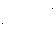
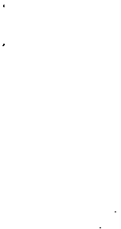

bu parçası. Buraya anlaşmayı yapmak için geldim.
Hemen .... İstediğiniz fiat nedir ?»
Rhodes Albert'e, sonra General'e baktı.
- «Bunu niçin istiyorsunuz. ? »
General Polyanski, oturacak yerine yelken bezi
gerilmiş kamp iskemlelerinden birine oturdu. İskemle çok alçak olduğundan, uzun bacakları bir çekirgeninki gibi ikiye katlanmıştı. Bacaklarım çadırın kenarına doğru uzattı. Cebinden çıkardığı incecik, esmer bir yaprak sigarasını dudaklarının arasına kıskıstırdı ve cevap vermeden önce yaktı.
- « Rusların bütün haberleşmelerini izliyoruz.
Sizi faka bastırdılar. İvan'ların kazaya uğramış gemilerini bir an önce alıp gitmek istediklerini düşünebilirsiniz ama, niyetleri bu değil. Burayı bir dinlenme merkezi olarak istiyorlar. Bozkaya'nın onlar için nice önemli olduğunu kestiremediğinizi sanıyorum.
Burayı ellerinde tuttukları süre bizi yakından kollayacaklar» Dişlerinin arasına kıstırdığı tütün kıymığını tükürdü. «Anlayacağınız, başımız dertte .. İşte bunun için Adanın öteki yarısına sahip olmak istiyoruz. Bozucu, karıştırıcı yayın yapan bir ara istasyonla onların kulağına kar suyu kaçıracağız.
Rhodes'in tedirginliği, canının sıkıntısı yüzünden açık seçik okunuyordu.
- «Sadece trol'lerini kurtarmak istediklerini
77
düşünmüştük. Burada bir kaç haftadan fazla kalacaklarını ummuyordum.
General : «İşte böyle» dedi. «Size Rusların verdiği paranın aynını ödeyeceğiz. Tabii dolar olarak.
Adanın öteki yarısına ne kadar çabuk sahip olursak,
o kadar sevineceğiz. »
Rhodes :
- «Hemen derken, ne kadar çabuk olmasını
kastediyorsunuz ?» diye sordu.
- «Mesela şimdi.»
Collins gırtlağını temizler gibi, hafifçe öksür-·
dü.
- «Bana kalırsa, memleketteki evinizin satışı
için hazırladığım belgeyi kullanabilirim, Mr. Rhodes.
Belki yer yer değişiklikler yapmak gerekecek ama,
yeni belgeler hazırlamaktan daha kolay olacaktır.»
Bunları söyleyen Collins, dosyaların birinden
henüz doldurulmamış bir satış anlaşması çıkardı.
-« Herşeyden önce, sizin de uygun bulacağınızdan şüphe etmediğim bazı şartlar olduğunu belirtmek isterim. »
General :
- «Hele bir öğrenelim,» dedi.
- «Bunların aynen yerine getirileceğine inanı-
yoruz. »
General bir şey söylemeksizin gülümsedi.
«
Adayı ahlak dışı amaçlarla, pazara çıkarı
-
lacak ehli hayvanların, ya da balık avında kullanılacak canlı yemlerin üretilmesi için kullanmayaca
ğınızı umuyorum»
Gen�ralin gülümseyişi gergin, sinirli bir sırıtma halini almıştı. COllins ifadesiz, donuk bir sesle okumasına devam etti :
- «Normal olarak, saat 23.00'den sonra radyo
çalınmamasmda, kiracıların dini bütün, içlerinde
tanrı korkusu ta.şıyan kiliseye devamlı şekilde giden
,
kimseler olmasında ısrar etiiyoruz. Paraziti önleyici
78


düzenlemelerle çatıdan çekilecek antenlerin kullanılması halinde, radyoyla ilgili isteklerimizde daha anlayışlı davranmağa hazırız. »
General yüksek sesle güldü. Collins onu duymazlıktan geldi.
- «Umuma açık yerler için kapanma saati yedidir. Mal sahibi, ya da temsilcisi, bu konuda deği
şiklik yapmakta bağımlı değildir. Özel şartlar göz
önünde tutularak, sekizinci maddede de değişiklik
yapılabilir. Sözkonusu mülk, teslim alındığı haliyle
devredilecektir. Yeniden boyanması, en iyi kalite üç
kat vernik çekilmesi de bu maddenin kapsamına girer. »
General : «Hey Tanrım, » dedi. «Senato bu şartları öğrendiği zaman, topunun pantolonuna ateş düşmüş gibi olacak. Hele şu çatıdan anten çekilmesi işini bir duysunlar .. Amerika'nın 51. Eyaletinin hangi şartlar üzerine temellendiğini söylemek şahsen çok hoşuma gidecek»
Albert belgeyi imzaladı. Böylece serveti bir kat
daha artmış oldu.
General saatine baktı ve ayağa kalktı.
- «Filoya dönmem gerekiyor.
Adamlarımızı
tez zamanda buraya getireceğiz.. Sizlerle iş yapmak
gerçekten zevkli. Daha sonra balık tutmak için belki
ben de birkaç günlüğüne buraya gelirim. »
Collins çadırın kapısını örten perdeyi açtı ve ziyaretçiye yol gösterdi. Sonra yutkundu. Rhodes'in sağ kolu, yorulup bıkmayan kadeh arkadaşı ve becerikli katibi, ilk kez şaşkınlığını açığa vuruyordu.
- «Hey, Büyük İsa» diye söylendi «Şuraya bakın . . · »
Adanın en doğu ucuna doğru karşı tarafı gösteriyordu.
Şafak vaktinin uçuk aydınlığında görünüşü ger
çekten ürkütücü, ne olursa olsun aşılmaz izlenimi veren engeli gördüler. Bir kayanın keskin yüzünden 79

başlayıp öteye doğru uzanıyordu. Yaklaşık olarak üç
metre yükseklikliğinde bir Berlin Duvarıydı bu. Kat
kat dikenli tel sargılar, sivri uçlu çelik kazıklardan
meydana gelen piramidlerin üzerine gerilmişti. Tam
ortada gene dikenli teller gerilmiş bir geçit vardı.
Bunun hemen ardında yeni kurulmuş, dörtbuçuk metre yüksekliğinde bir kule görünüyordu. Kulenin tepesindeki sahanlıkta bir makineli tüfeğin ardında bir adam duruyordu. Onun başının üstünde de her yöne
dönebilen bir projektör yerleştirilmişti.
!ki yanı dikenli telle sınırlanmış geçitin kapısında, omuzımda makineli tabancası sarkan bir karaltı duruyordu. Bir ucundan tasmaya bağlı kısa bir zincirle, kulaklarını dikmiş bir polis köpeğini tutmaktaydı.
General :
- «Başka bir şey mi umuyordunuz?» diye sor-
du. Çadırın dışına çıktılar. Dmitri Ki'l"ov'un güvertesinde burnunu yükseltmiş roketin yanında duran birkaç Rus, helikopterin havalanmasını ve uzaklaşmasını dikkatle izledi.
Albert, Victoria'ya :
- «Buraya tatil için geldim,» dedi. «Bir çırpıda
üç milyon İngiliz lirası kazandım ve bir gececik olsun doğru dürüst uyuyamadım. Bir kereste fabrikasında olsak başımızı daha iyi dinlerdik.»
Artık yatağa dönmenin bir anlamı yoktu.
Albert ve Victoria yanyana durup, tel örgünün
ardındaki Rusları gözlediler. Trol'ün güvertesindeki
Vorolokov'a el salladılar. Vorolokov onları görmemezlikten geldi. Telörgüden çekilmiş çite doğru yürü düler. Kulaklarını büsbütün diken köpek, kısa zincirini geren bir hareket yaptı.
Gözetleme kulesinde, makineli tüfeğin ardında
oturan Rus şöyle bir kımıldandı. Köpekli nöbetçi
makineli tabancasına davrandı. Ortalığın hali hiç de
80
güven verici değildi. Dönüp çadıra doğru yürüdüler.
Victoria: «Güzelim Adamızı bozuyorlar,» dedi.
«Amerikalılar gelince mesele çıkar mı acaba ? »
Albert : «Yakında öğreneceğiz» diye karşılık verdi. «Şuraya bakar mısın ? »
Batıyı işaret etmişti. Gökyüzünün henüz iyice
solup açılmamış kara fonunda bir savaş filosu görülüyordu. Kruvazörler, destroyerler ve iki uçak gemisi ...
Adayla filo arasında daha küçük gemiler vardı.
Öyle hızlı yol alıyorlardı ki, henüz çok uzakta olmalarına rağmen teknelerin baş tarafında kırılan dalgaların beyaz köpüklü sırt çizgileri açık seçik farkedilebiliyordu.
- «Ötekinin yanma gidelim»
Dördü birden, üzeri düz, kayalık yükseltide durup, son hızla kendilerine doğru yaklaşan gemileri seyre koyuldular. Yukarda şimdiye kadar gördüklerinin hepsinden büyük bir helikopter döneniyordu.
Kocaman iki pervanesinin biri baş tarafında, öteki
de kuyruktaydı.
Görünüm gerçekten korkutucuydu. Gemiler iyiden iyiye yaklaşınca, karaya çıkarma tekneleri onlardan koptu. Gemilerin tepesinden ayrılan helikopter, kulakları sağır edici bir uğultuyla Adaya yaklaştı ve önceden kararlaştırılmış, uygun bir noktada asılı kaldı. Sonra alçaldı. alçaldı. Uygun bir açıklığa
kondu. Kapıları açıktı. İçerde çömelmiş, piyade tüfeklerini sıkı sıkı tutan, haki renkli insanlar görünüyordu. Gövdesinin yan tarafında kocaman beyaz bir yıldız ve «Birleşik Devletler Piyadesi» kelimeleri
vardı.
Sığlığa ulaşınca, karaya çıkarma teknelerinin
baş tarafındaki kapaklar öne düştü. Teknelerin içi
sıra sıra, çömelmiş, miğferli, otomatik tüfeklerini sı-·
k1ca kavramış, yüz çizgileri gergin adamlarla doluydu. Albert, onlara önderlik eden kimsenin elinde tut-81
f /6
tuğu el bombasını bile görebiliyordu. Tekne sert bir
vuruşla kayalara çarptı. Küçük bir koya girmişti.
- «Jeronimo . . . . »
El bombasını tutan çocuksu yüzlü Deniz Piyadesi Teğmeni, omuzunun üzerinden şöyle bir baktı. Nicedir beklediği büyük an gelip çatmıştı işte. Adamlana onu izlemeleri için elini salladı Bir kez daha :
- «Jeronimo» diye bağırdı,
Amerikan vurucu birliğinin öncüleri kıyıya sıçradılar. Çakıl taşlarının üzerinde düzenli bir koşu tutturan adımların rap rap sesleri çevrede yankılar
yaptı. öncüler, şaşkın şaşkın bakınan !ngilizl?rin
aşağısında kalan ilk kayaları tutmak için ileri atrl ·
dılar.
Önlerindeki açıklığı silahlarının atış alanına ah
�ak bir yer tuttukları zaman, adamların ikinci dizisi
de kıyıdan koptu.
- «Hücum . . . »
Amerikalılar portakal rengi çadırla bir hizaya
gelinceye kadar, mevzilenerek, korunak yerleri tu ·
ta tuta, sıçrayarak ilerlediler.
Rusların bulunduğu yönde koşan genç Teğmer.,
Victoria'ya :
- «Güna'ydın, Ma'am ( *) » diye seslendi .
Hala sıkı sıkı el bombasını tutuyordu. Sonra ;
- «Yayılın ve yere yatın, » diye bağırdı.
Çıkarma birliğinin erleri bir yelpaze düzeninde
yayıldılar. Bulabildikleri her korunak yerde mevzi ·
lendiler. Tüfeklerinin namluları, gözlerine inananııyormuşçasına öyle bakakalan iki Rus denizcisine yöneltilmişti.
- «Kazmağa başlayın. »
On beş küreğin aynı anda sert, kayalık zemine
çarpmasından çıkan ses duyuldu.
( *) Saygılı bir ifadeyle «Madam» demek istiyor. Aynı
lcelimenin Amerikan ağzıyla söylenişi. -- Ç.N.
82

Düpedüz can sıkıntısı belirten bir başka se::ı ·
- «Şaka ediyor herhalde, » dedi.
Bunu üçüncü bir ses izledi :
- «Pantolonunun önünü ilikle, Morelli. Çevred·�
bir kadın var. »
Helikopter çekip gitti. Şimdi ortalığı yoğun bir
sessizlik kaplamıştı. Çadırın yakınında diz çökmüş
olan kırmızı yüzlü bir Binbaşı :
- «Telsiz,» diye bağırdı.
Sırtında taşıdığı uzun antenli, çadır bezinden
kılıflı ağır kutuyla yüklü bir er, subayın yanına ula
şıncaya kadar kayanın düzlüğünde karnının üzerinde
sürüne sürüne ilerledi. Binbaşı :
- «Seslen bakalım bizimkilere, » emrini verdi.
- «Kırmızı'dan Bekleyen Mary'e. Kırmızı'dan
Bekleyen Mary'e . . . Beni duyuyor musunuz? Tamam. »
Victoria'nın kaşları elinde olmaksızın yukarıya
doğru çekilmişti. Binbaşı ona baktı.
- «Bu kod isimlerini bulan herifi bir kıstm:am,
ne yapacağımı biliyorum, » dedi.
- «Kırmızı, yerini aldı. Kırmızı yerini aldı. Sizi bekliyoruz. Tamam . . . »
Adanın birkaç yüz metre açığında. dönenip duran ikmal gemileri, burunlarını kayalıklara verecek şekilde yanyana dizildiler. Kıyıya daha çok sayıda,
kamuflajlı savaş giysileri içinde askerler sıçrayıp
çıktılar. Kayalıklar boyunca istiflenip yükselen kutuları, sandıkları elden ele geçiren diziler meydana geldi.
Portakal rengi çadıra ve sakinlerin9 dönüp bakan bile yoktu.
Teknelerden biriyle gelen bir grup, beraberinde
getirdiği ve bir topun parçalarını andıran ş9yleri,
Rus kesimine açılan geçidin hemen önündeki düzlük
kayanın üstünde, birbirine çatıp birleştirmeğe koyuldu.
83

Rus balıkçılar şaşkın, afallamış öylece duruyorlardı. Trol'i.in g.eri kalan tayfası ve bilimadamları da iki muhafızın yanına gelmişlerdi. Dikenli telden çit
boyunca dizilmiş, karaya çıkarma hareketini hayretle izliyorlardı.
Başlangıçta belli belirsiz bir topu andıran, ne
olduğu kesinlikle anlaşılmayan şey, giderek belirli
bir şekil aldı. Kare biçimi bir bölüme birleştirilen
bir dizi geniş çaplı boru ortaya çıktı. Sonunda, oraya getirilmiş olan uzun sandıklar açıldı ve bunların içinden alınan narin, silindir biçimli cisimler, ana
bölümden geniş çaplı borulara yerleştirildi.
Rhodes :
- «Tanrım,» diye söylendi. «Bir roket-atar . . . »
Yaptıkları işi beğenen gözlerle seyreden teknis-
yenler, kırmızı yüzlü Binbaşıya seslendiler. Yanlarına gelen subay, aşırı, gösterişli bir tören havasıy!a, silahı kırk metre kadar ötedeki hedefe, Dmitri Kirov'a göre atış pozisyonuna ayarladı.
Bir yanda bu iş olurken, Adanın Amerikan kesimindeki kaynaşma çomak sokulmuş bir karınca yuvasını akla getiriyordu. Kendilerine verilmiş esrarengiz görevleri yerine getirmek için her yönde koşturup duran insanlar görülüyordu.
Plastik levhalar, katranlaşmış çadır bezi ruloları, yelken bezi topları, bilek kalınlığında ip kangalları, koca koca tel makaraları, bir boyda kesilmiş keresteler o yana, bu yana taşınıyordu. Dört İngiliz, zaman zaman kendilerine yabancı gelmeyen bazı şeyleri, kapı kanatlarını, pencere çerçevelerini, tuvalet malzemesini1 is;ırnmleleri, bir piyanoyu, hatta otomatik olup bitenleri hareketsiz, suskun, yüzlerine yansımış yoğun bir şaşkınlık içinde seyrederlerken, Adanın kayalık zemininde bir garnizon yükseliyordu.
Onların portakal rengi çadırı, kayalık düzlük
üzerinde iki sıralı çadırlardan meydana gelen kare-
84


nin köşe taşı durumunda kalmıştı. Adanın güney
ucunda, portatif parçaları fabrika yapısı, kaşla göz
arasında çatılıp kurulan büyükçe iki yapının arkasında küçük nöbetçi kulübeleri dikildi.
Victoria, çevrede olanları hayranlıkla karışık
bir şaşkınlık içinde seyrediyordu. O büyük yapıların
ne olduğunu sormağa hazırlanırken, bir deniz piyadesi elindeki tabelayı kayaların arasına çıktı. Tabelada «Latrines» yazısı okunuyordu.
Sonra sonra başka tabelalar da belirdi. İki yapıdan daha büyük olanı «Gümüş Dolar» diye isimlendirildi. Giriş yerine, «Kantin-İnanmayan girip baksın» yazılı bir tabela iliştirildi.
Öteki yapı, «PX-Yalnız Amerikan Ordusundan
Kimseler İçin» tabelasıyla vaftiz edildi. Sadece. Kızılderili yerlilerin kulübesini andıran bir yapı isimlendirilmedi. Yağlı yağlı ışıldayan dış duvarları, kurulur kurulmaz kapısından dışarı vuran kopkoyu ve çeşit kokularla yüklü duman, buranın mutfak bölümü olduğunu açık seçik belli ediyordu Mutfak bölümünden çıkan duman, dikenli telden
çitin ardından şimdi biraz daha gevşemiş, hatta eğleniyormuş gibi bakan Rusların karşısında mevzilenmiş, silahlı deniz. piyadelerinin üzerinde kıvrıla büküle yükseliyor, alçaktan asılı bir bulut görünümünü alıyordu
Trol gemisinin tayfaları bütün bu sahneleri
ölümsüz kılmak istemiş olacaklar ki, bir düzine Vostok fotoğraf makinesinin denklanşörüne basılmasından çıkan kuru tıkırtılar duyuldu Ruslardan bazıları daha artistik açılar yakalamak amacıyla basamaklara tırmandıkları, hatta gözcü-nöbetçi sahanlığını tıkış tıkış doldurdukları için, gözetleme kulesi bir
yana doğru hafifçe yatmıştı
Dmitri Kirov'un burnunda bacaklarını sarkıtarak oturan Vorolokov, esmer sigaralarından birini tüttürüyordu. Tanya onun omuzunun hizasında dur-85

muştu.
Kıyıdan çeyrek mil açıkta demirli Rus destek
gemisi Ayaı: dan bakan gemicilerin dürbünler�nin
camlarında yansıyan güneş, ışıltılı kıvılcımlanmalar
yapıyordu.
Bütün bunların arasmda, Amerikalıların çıkarma hareketi ve ardından olanlarla hiç ilgilenmeyen biri vardı. Genellikle açgözlü deniz kuşlarının işgal
ettiği kayanın üzerinde oturan bu şahB, elinde uzunca bir ip tutuyordu.
Bu ilgisiz, kendi işine dalıp gitmiş kimse trolgemisinin ahçısı Boris'di. Kendini tamamen balık tutmağa vermişti. Yanıbaşında bir kova duruyordu.
Mesinayı sertçe çekti. Dikkatle kıyılmış, küçük
bir domuz pastırması parçasıyla yemledi Sonra kolunun geniş bir hareketiyle suya attı. Adanın yarısını hedef tutan işgal hareketiyle hiç ilgilenmediği gibi,
Deniz Piyadesi üniformalı teknisyenlerin çekilmelerine de ilgisiz kaldı.
Çıkarma teknesi uzaklaşınca, Ada ansızın eski
suskunluğuna, durgun haline kavuştu.
Kırmızı yüzlü Binbaşı, düzlüğün ortasında dikilmiş bayrak direğinin altında durdu. Vurucu-öncü birlik, Rusların dikenli telden engellerinin karşısında
aynı hareketsizlikle yatıyordu.
Binbaşı : «Geri çekil, » diye bağırdı.
Doğrulup kalkan Deniz Piyadelerinin ayak ses-leri duyuldu. Bayrak direğinin çevresinde iki sıra oldular. İlk saldırıyı cesaretle yöneten genç Teğmen ileri çıktı ve Binbaşıyı selamladı.
Binbaşı : «Bayrak, » dedi.
Savaş ceketinin düğmelerini çözen Teğmen, çelimsiz gövdesine sarmış olduğu «Yıldızlar ve Çubuklar»la desenli bayrağı çıkardı. Fazla uğraşmaksı zın ipe geçirdi ve Binbaşının emrini bekledi.
- «Borazan . . . »
Bir Deniz Piyadesi eri iki adım öne yürüdü. Kaş-
86


la gez arasında neresinden çıkardığı anlaşılmayan
borazanı dudaklarına götürdü.
Esintisiz havada, Adanın üzerinde, sert, tiz notalarla şekillenen bir ses yayıldı.
Teğmen bayrağı direğe çekti.
Direğin tepesine ulaşan bayrak, çırpmtısız bir
gevşeklikle orada kaldı.
Basit Rus balıkçılar için heyecanlı, duygulandırıcı bir andı bu. Dikenli telden engelin ardından çoşkulu bağrışmalar yükseldi. Tanya ellerini çırptı.
Bir ses : «Morelli, Allah aşkına önünü ilikle,» de-
di.
Amerikalılar Adaya işte böyle geldiler . . .
Aynı anda Londra'da, Başbakan telefona cevap
veriyordu.
- «Öncelik ve önem taşıyan bir haber, efendim.
Amerikalılar Manş Denizindeki Adanın yarısını sat'n
aldılar.»
Uzun bir sessizlik oldu.
- «Aloo, beni duyuyor musunuz, efendim ?»
Sıkıntılı bir ses karşılık verdi :
- «Hangi Adanın hangi yarısını ? .. »
- «Öteki yarısını Rus'ların aldığı Adanın.»
- «Ürada neler oluyor? Çabuk öğrenin. Hiç va-
kit geçirmeksizin . . . »
A. hizeyi 'yerine bırakırken, kırmızı telefonun zili
çaldı.
- «Aloo, ·washington mu ?»
- «Hayır, Paris. Ödemeli bir konuşmayı kabul
ediyor musunuz ?»
Başbakan, aksanlı Fransızcasıyla :
- «Hah, ha . . . Tres ( * ) amusing,» dedi. «Eğer
şu Ada hakkındaysa, onları durdurmağa çalışıyoruz. »
- «Her zaman olduğu gibi, siz parmağınızı oynatıncaya kadar iş işten geçecek. Madam nasıllar ? .. »
(*) «Çok eğlenceli» anlamına - Ç.N.
87

Başbakan, karşıda ahizenin yerine bırakılmasından çıkan kuru tıkırtıyı duydu.
Ölü cihaza : «Trcs bon,» ( ) dedi.
"
6
Yağmur suyu portakal rengi çadırın zeımnıne
çekilmiş döşeme kaplamalarının altından guruldayarak akıyor, düzlük kayanın meyilli yarıklarından kı·
yıya doğru yürüyordu. Çadır ve barakaların çevrelediği alan bir iç deniz halini almıştı. Yağmurla ıslanıp ağırlaşan bayrak direğe sarılmış, çarpıntısız, öylece duruyordu. Sağnak halindeki yağmurun sık
ve sert damlaları kayalara çarpıp saçma tanecikleri
gibi dağ·ılı'yor, çok alçalmış bir sis tabakası görünümü alıyordu.
Gözetleme kulesinin sahanlığında, projektöriin
üstiine gerilmiş yelken bezinden tentenin altında otu ·
ran Rus muhafız, aşağıdaki sırsıklam Amerikan nö·
betçiye baktı. Yağmur Deniz Piyadesinin miğferinin
kenarından sızıyor, muşambasının yakasından içeri,
ensesine giriyordu. Bu heykel hareketsizliğiyle du··
ran nöbetçi, Rus trol gemisini gözlüyordu. Alt ve
üst çenesi, dişlerinin arasındaki jiklete kaskatı kenetlenmiş gibiydi. Ters asılı tüf eğinin namlusundan ayağındaki savaş botuna
doğru hiç durmaksızın
akan yağmur suyu, kesintisiz, sonu gelmeyen bir
çiş izlenimi veriyordu . . .
Bozkaya'daki kritik durum, teleks cihazlarının
takırtılı gevezeliğiyle dünya basınını yoğun, çoşkulu
bir faaliyete geçirdi. Amerikalıların çıkarma yaptı·
ğının ertesi günüydü. Londra'da Daily Express gazetesinin kuru çatırtılarla çalışan teleteyp'i bir cümle-
( *) «Çok iyi» anlamma.
Ç.N.
·-·
88

nin ortasında hareketsiz kaldı. Kısa ve boğuk zil sesi önemli bir haberin varlığını belirtti. Sonra cihaz tekrar canlandı. Gece yarısıydı. Odadaki nöbetçi
Lady Cluıtteley'in ( * ) ucuz baskısının
yıpranmış
bir kopyasını cebine sokuşturdu. Mesajın kaydedildi
ği kağıdı cihazın silindirinden kopardı. Elinde kağıt
parçasıyla, telefonun bulunduğu masaya yöneldi.
Dış Haberler bölümünün Gece Sekreteri çelimsiz ve ne yerse yesin karnı bir türlü doymayan bir adamdı. Masasının başında . oturmuş, nöbetinin üçüncü akşam yemeğini yiyordu. Mesajı alan, kağıdı bir çatalın ucunu ağırlaştıran kocaman bir kek parçasıyla, Dış Haberler bölümü Gece Sekreterinin suratı arasında salladı.
Gece Sekreteri kendini yemeğe öylesine vermişti ki, neredeyse mesajı da açılmış ağzına alacaktı.
Mesajı getirmiş olan :
- «İki dilim ekmek arasına koyarsam belki daha lezzetli olur, » dedi.
Asıl işinin yanısıra g.ece nöbetinde kalanlara
ufak tefek bazı şeyler satar, böylece yolunu bulurdu. Birden aklına gelmiş gibi :
- «Hazır gelmişken, paslanmaz çelikten jilet
ister misin?» diye sordu.
- «Eksik olma, istemem, Ginge. Geçenlerde sat-
tığın şu en iyi kalite kaputları hala unutmadım.»
Ginge : «Başlatma bilmem neyinden,» dedi.
- «Çek git öyleyse . . . »
Dış Haberler Gece Sekreteri, çatalını tabaktaki
tepeleme kızarmış patatese daldırdı. Sonra mesajı
bölmesiz salonun bir köşesindeki nöbetçi yazı işleri
görevlisinin masasına iletti.
- «İşte sana ortalığı çalkantıya verecek bir
haber. N ew York'tan -geldi. Ruslar ve Amerikalılar
( "' ) Ünlü İngiliz yazarı D.H. Lawrence'in dilimize de
çevrilmiş olan bir romanı. -- Ç.N.
89
Scilly Adalarından birini yarı yarıya bölüşmüşler.
Ruslar, Birleşmiş Milletler'de Amerikalıları saldırganlıkla suçluyorlar. New York'tan daha ayrıntılı bilgi isteyeceğim. »
Express bu haberi ilk sayfasında büyük puntolu başlıklarla işledi. Ada sakinleri arasında bir referandum yapılmasını önerdi. Hiç bir etki altında kalmadan verecekleri oylarla, İngiliz, Rus ya da Amerikan yönetimlerinden hangisini istediklerini belirteceklerdi. Vazgeçilmez bir alışkanlıkla, İngiltere Başbakanı'nın görevinden çekilmesini istedi.
Diğer Londra gazetelerinin tepkileri de hayli ilginçti.
Daily Mail ortaya «Sıfır kilometrede» bir oto··
mobil koyarak, okuyucular arasında bir anket açtı.
Ankete katılanlar, bir adada yaşamak için en gerekli on şeyi bildireceklerdi.
Sun, ev kadınlarının görüşlerine sözcü
oldu.
Bozkaya'daki Amerikan işgalinin, Amerika'daki hayat şartlarını, fiatları yarı yarıya etkileyeceğini ileri sürdü.
Sketch'in başlıkları daha çarpıcıydı. «Bir adayı işte böyle koruyorlar. » diye yazmıştı. Sayfanın alt yarısında, bir kayanın üstünde oturan bikinili bir
kızın fotoğrafı görülüyordu.
Daily Mirror alabildiğine ciddiydi :
«Füzeler,
Adanın vahşi ve sakin güzelliğini tehdit ediyor. »
Telegraph arşivini kurcalamış,
1889 yılında
Adayı ziyaret eden ve deniz kuşlarının hayatını inceleyen bir ornitoloji ( *) uzmanının raporunu yayınladı. Bu rapora göre kayalıkların derin yarıklarından sızan gaz, çok zengin maden kaynaklarının varlığını
belirtiyordu.
Times gazetesi, iç sayfalarını çeşitli konularda-
( * ) Kuşların hayatını ve özelli!clerini
inceleyen bilim
dalı. - Ç.N.
90

ki uzmanların Adayla ilgili inceleme ve açiklamalarına ayırmıştı . Günün başka haberlerine de yer verilmişti ama, Adaya ilişkin yazıların kapladığı sütunlara kıyasla bunlar çok azdı.
Buna karşılık, The Gua�dian sadece başka haberlerle doluydu. Ancak ertesi gün uyanabildi.
Durumu uzaktan izlemekle yetinmeyen gazeteler savaş alanına kadar uzanmak zorunluğunu hissetti.
Öğle vakti saat l'de, Fleet Street'in ( *) fele
ğin çemberinden geçmiş kurt elemanları, dış haberler muhabirleri, televizyon ve radyo ekipleri yola düşmüşlerdi bile. Gazetelerin taşra bürolarının muhabirleri, «Bozka:ya'yla ilgili haberlere öncelik tanımaları», daha yakın yerlerde olanlar da tez elden atlayıp oraya gitmeleri için uyarılmışlardı.
Buna
rağmen, olayların taşıdığı öneme eşdeğerli bir ölçüde verilebilmesi için takviyeye, merkezden gönderilecek kimselere ihtiyaç vardı. Gecenin geç saatlerine kadar açık lokantalarda, bazı evlerde, Basın Kulübünde telefonlar hiç durmaksızın işledi. Alkol derecesi yüksek siyah biralar, cin-tonik'ler, birlikte yemeğe çıkılmış eşler, sevgililer alelacele terkedildiler.
Halen görev başında ve görev dışında olan muhabirler, bazıları hallerinden hoşnut, bazıları gönülsüz, söylene söylene bürolarına sürüklendiler. Durum kendilerine açıklandı, gerekli bilgiyle donatıldılar.
Somurtuk, canı burnunda bir gazeteci bürosundan dışarı uğradı. M.G.B. arabasını park etmiş olduğu yere koşarken, bir taksinin çarpmasından kıl payıyla kurtuldu. «Yasak yerde park ettiği ıçın»
arabasının ön camına sokuşturulmuş olan ceza kağıdını oradan alıp, öndeki rakip gazetelerden birine ait kaptıkaçtının camına yapıştırdı. Sonra gaza b astı,
( * ) Londra'da gazetelerin, basımevlerinin bulunduğu
cadde. -· Ç.N.
91


lastikleri asfaltta iç tırmalayıcı sesler çıkararak oradan uzaklastı.
Şimdi herkes için hedef belirliydi. Önce oraya
Adaya varılacak, sağlanan haberler dakika sektirmeden gazeteye ulaştırılacaktı.
Yarım saat sonra, Manchester'in güney bölgesinde kiralanacak tek uçak bulmanın olanağı 'yoktu.
Büyük para desteleri kaşla göz arasında el de
ğiştirdi. Fotoğraf makinelerini yüklenmiş foto muhabirleri uçağa doluştular. Henüz bir saat önce Basın Kulübünde poz kesen, şişinerek en yeni mesleki başarılarından söz eden röportaj muhabirleri, uçak
alanından, tren istasyonu büfelerinde kümelendiler.
A30 numaralı şehirler arası yol üzerindeki polis devriye arabaları, ardı arkası kesilmeyen bir dizi halinde, alışılmamış bir hızla batıya doğru yol alan otomobillerin peşine düşmekten bir hal oldular.
Yola çıkanların tümü sağ esen hedefe ulaşamadılar. Bu yolda yarıda kalanlar, dökülenler de oldu.
Faciaya yakın dış görünüşlerinin altında gülünç 'yönleri ağır basan olaylar geçti. İskoçyalı bir röportaj yazarı, büroya çağrılmadan biraz önce yarıya kadar
dolu bir kırmızı şarap şişesinin mantarını açmıştı.
Masadan ayrılırken, şarap şişesini ceketinin iç cebine sokuşturdu. Bir süre sonra da, onu oraya koymuş
olduğunu unuttu. Bütün akşam içtiği içki ve hiç hesapta olmayan uçak yolculuğu onu rahatsız etmişti. Arkadaşlarının yanından ayrılıp tuvalete gitti.
V Licudu ikiye katlanırcasına lavaboya kapandı. Cebinde unuttuğu şişeden akan şarap gömleğine yayıldı.
Tuvaletten çıkıp dar geçitte sendeleye yalpala·
ya yerine dönerken, akşamın keyfinden iz, eser kalmamıştı. İrlanda televizyon grubundan bir görevli, ırkına çok uygun çoşkulu, dramatik bir edayla :
- «Tanrım,» dedi. «Simon gırtlağını kesmiş. »
Genç bir muhabire telefon numarasını vermekte
92
olan hostes başını çevirip baktı ve dizleri bükülerek
yere düştü. Bayılmıştı. Genç muhabir, yolun geri kalanını öpücükleriyle güzel hostesi ayıltmağ.a çalışarak geçirdi.
Başka bir uçakta, gazetecilerin ceplerindeki bütün parayı kaptırdıkları bir poker çevriliyordu.
Oyunculardan biri gözünün ucuyla saate baktı ve
son eli de alıp yerinden kalktı.
Gazeteciler bayağı bozulmuşlardı.
- «Zararımızı çıkarmak için bize bir şans ta-
nı. »
Masadaki bütün parayı toparlayan oyuncu :
- «Özür dilerim, » dedi. «İşimin başına dönmem
gerekiyor. »
- «Oyunu bırakman için bir neden değil bu.
Nasıl olsa şimdilik yazacak bir şey yok. Uçaktan haber gönderecek değilsin ya ? .. »
- «Haber gönderecek falan değilim. Uçağı gideceğiniz yere kadar ulaştırın.ak bana düşer. Uçağın pilotuyum ben . . . »
Öfkeyle, can sıkıntısıyla kızarmış yedi surat bir
anda kireç beyazı kesildi. . .
Şafak vakti, gazetecilerin çoğu Cornwall'e ulaşmıştı. Fransa'dan, ·Belçika'dan, Hollanda ve Almanya'dan gelenler de vardı. Londra'dan gelen bir grup yalvar yakar olup, külçe altın taşıyan hızlı bir kamyona binmiş ve farkına bile varmaksızın kendini yolun bir tarafındaki bayıra savrulmuş durumda bul
-nuştu. Grup ve kamyon, yerine ulaşmayan altını aram.ağa çıkan bir polis ekibi tarafından üç saat sonra kurtarıldı.
Ortalığın haH tam anlamıyla ana, baba günüy:
fü.
Keııdilerini direk olarak Scilly Adalarına götb.
recek kiralık hafif ucak bulamayan gazeteciler, bj,.
siire icin haber avcılığını bırakıp taşıt aracı avcılığıyla o'valandılar. Scillv Adalarından St. Mary'e helikop-93


ter seferleri şimdiden bir misli arttırılmıştı. İlk heUkopter şafakla hareket etti.
tlöportaj yazarları, foto muhabirleri ve kame
ramanlarla dolu balıkçı tekneleri çoktan clenize açılmıştı. Akşamdan kalma, yarım yırtık bile uyuyamamış, yarı aç, şimdi de deniz tutmasıyla perişan haber a vcıları Bozkaya'ya doğru yol alıyorlardı.
Yağmur yağıyordu. Kasvetli, cienizle birlesmer.P--
0ine alçalmış kurşun rengi gökyüzünün altındı:ı nı:•
yönden estiği belirsiz ıslak, pis bir rüzgar sert sert
yüzlerini kamçılıyordu. Tekneler Cornwall'ın Borunak kıyılarından açılınca, rüzgar b�pten azıttı. Düpedüz yel üfürüyor, sel götürüyordu. Kemiklerine kadar işleyen yağmurdan, Tanrı bilir ilikleri bile sulanmış, kanlarındaki alkolün derecesi iyiden iyiye düşmüştü.
Balıkçı teknelerindeki yolcular, ceplerinde bulup buluşturdukları son metelikleri bir balıkçı mu
şambası edinmek, baş taraftaki ağır kokulu kabinlere sığınmak için harcadılar. Ardarda bindiren dalgalarm tersyüz ettiği mideler, her yere sinmiş balık kokusuna, ter kokusuna, mazot dumanına dayanabilecek durumda değildi, İkiye katlanıp kenardan denize sarkmış, peri
şan, içi dışına çıkmış biri :
- «Vazgeçtim, burada indirin beni, » diye inliyordu.
Meslekdaşlar arasında pek rastlanmayan bir yakınlıkla onu kemerinden tutan bir başka gazeteci :
- «Futbolun niçin deniz sporlarından daha çok
tuttuğunu şimdi anlıyorum» dedi.
- «Bana bir iyilik etmek istiyorsan, denize itiver. »
Dümen başındaki Cornwall'li balıkçı ağız dolusu
güldü. Öteki balıkçılar kaba yontulmuş pipolarını
kemiriyor, çavdar viskisi şişesini elden ele geçiriyorlardJ. Onların ölçülerine gıöre, orta halli bir esintiydi 94
bu.
Sonra rüzgar dindi. Yağmur hafifler gibi oldu.
Görüş alanı açıklığı bir milden daha azdı. Yolculuk
hiç bitmeyecek izlenimi veriyordu. Denizin yüzü iyice döğülmüş demir levha gibi dümdüzdü .
.İlk gazeteci grubu Bozkaya'ya sabahın saat 9'unda vardı. Bunlar doğrudan doğruya Şerburg'dan gelen ve Paris-Mat.ch'ı temsil eden Fransızlardı. Altı düz, büyükçe bir yarış teknesiyle gelmişlerdi.
Fransızların teknesi kimse farkına varmaksızın
yaklaştı ve demir attı. Yan taraftan kauçuk bir bot
indirildi. Kayaların çevrelediği küçük girintiye doğru
kürek çektiier. Gazeteci milletinin ilk kafilesi Adaya ayak basmıştı.
Nöbetçi deniz piyadesi hemen savunma durumuna geçti. Otomatik silahını kalçasının hizasında tuttu.
- «Dur . . . Olduğunuz yerde kalın. » Sonra cikletini dişlerinin arasından tükürddü. «Ne isti'yorsunuz ?»
- «Komutanla konuşmak
istiyoruz. Paris -
Match'dan geliyoruz. »
Deniz piyadesi eri sol eliyle düdüğüne davrandı. Kısa, kesik üç düdük sesi duyuldu. Kantin bir anda boşaldı. Herkes görevinin başına koştu.
Ziyaretçilerin çoşkuyla, sıcak bir ilgiyle karşılandığı söylenemezdi. Kırmızı yıüzlü Binbaşı Corrigan, onlarla çıkışır tonda konuştu. «Yorum yok» dedi. Fotoğraf çekmelerine karşı çıkmadı. Hayır, bir Rus nöbetçisiyle, ya da kendi erlerinden biriyle fotoğraf çektirmeyecekti.
Deniz piyadeleri, beş Fransızı yağmurun altında, kıyıda bırakıp kantine döndüler. Fransızlar aynı yoldan, dikenli çit engelin geçit yerindeki Ruslara yaklaşmayı denediler. Rusların davranışı daha so
ğuktu. Onların varlığını bile farketmemiş gibiydiler.
Foto muhabirleri, Adada görebildikleri her şeyin
95

fotoğrafını çektiler. Portakal rengi çadırın kapısında duran yarı giyinik Victoria'yı gördükleri zaman, makinelerine yeni filim takıyorlardı.
- «Vay canına . . . Adada seks faslı da tamam.»
Birkaç saniye içinde, çadır gözleri kötü kötü
ışıldayan Fransızlarla dolmuştu.
Sonra Basın Filosunun bütünü Ada'ya yaklaştı. Nisbeten hafiflemiş yağmurun altında tekneler sokulurken, gene nöbetçilerin keskin, tiz düdük sesleri duyuldu.
Ruslar daha sessiz, fakat kesin, kararlı bir tavırla harekete geçtiler. Trol gemisinin yan tarafındaki ip merdivenden cambaz ustalığıyla inen silahlı muhafızlar, kayalıkların çevresinde önceden kararlaştırılmış 'yerlerini aldılar.
Sert bir bağırış, bunun .ardından da trol gemisinin ayakta kalmış tek direğine çekilen kızıl bir bayrak yükseldi. Bir megafondan yayılan kısa, katı, donuk tonlu komutlar, gazetecilerin teknelerinin motör seslerini bastırıyordu.
- «Dikkat . . . Uzak durun. Uzak durun. Burada
karaya çıkamazsınız. Sovyet kara sularında bulunuyorsunuz. Hemen uzaklaşın.»
Bir kameraman, açık seçik belirli Londra'lı bıç-
kın şivesiyle :
- «Kafa ütüleme, İvan, » diye bağırdı.
Yüksek tonda, kaba gülüşmeler duyuldu.
Buna rağmen, telmeler verilen komutlara uydular. Harekete geçip, Adanın Amerikalılara ait kesimine 'yöneldiler. Demirlemek, dalgaların çarpışıyla birbirlerine bindirmemek için belirli .ara bırakarak sokuldular. Uyanık balıkçılar, daha yakma sokulmak
için fazladan para koparmanın yoluna baktılar. Karaya çıkarma hareketi için tüm ustalık ve yeteneklerini gösterdiler.
Bunu izleyen birkaç dakika, Alman ve Japon fotoğraf, sinema m_akineleri endüstrisinin yararına iş -
96


ledi. Kargaşalık esnasında, teknelerden birindeki bir
kameramanın ayakları ıslak balık ağlarına takılıp
kaydı. Yüzükoyun, karın üstü ileri doğru uçtu. Elindeki makinenin objektifi, kutunun içine gömüldü .
Bir gazeteci tekneden tekneye atlayarak kıyıya kadar ul�şabildi. Orada bir fotoğrafçıya tutunmak istedi. İkisi birden denizi boyladılar. Onları, bir teknenin köpek balığı avcılığında pişmiş mürettebatı kurtardı.
1700 İngiliz lirası değerinde Arriflex ( * ) taşı
yan bir televizyon kameramanı, çevik bir hareket.le
kıyıya sıçradı. Ayağı teknelerden birini karaya bağlayan halata takılıp, kayaların üstünde dengesiz ü�
adım attı. Batarya bağlantısından kurtulan kamera
birbuçuk metre havaya uçtu. Sonra açık arazi yüz.
numaralarından birinin çukuruna doğru alçaldı ı;e
kameramanın yüreğini parçalayan bir ses duyuldu.
Tekneler arka arkaya geliyordu. Yağmur da de
vam ediyordu bu arada. Çadır kapısının iç tarafında durmuş, yaklaşan gazetecileri gözleyen Rhodes :
- «Tanrı aşkına cin şişesini sakla, Collins, » de-
di.
Paris-Mat.ch grubu trol gemisini fon olarak :..Jmış, Victoria ile Albert'in fotoğraflarını çekiyordu.
Ansızın, dirsek, tekme, itiş kakış aynı hedefe yÖ 1l.: ·
len rakiplerinin saldırısına uğradılar.
- «Bacağını biraz daha aç, güzelim. »
Victoria göbeğinfo üzerinden düğümlenmiş be ·
�·az bir gömlek ve uçuk mavi, mininin de minisi bir
etek giyinmişti. Hafif nemli, sarı saçları yumuşak bir
esintiyİe çırpınıyordu. Gömleği yağmurun etkisiyle
lı.Pmen hemen saydamlaşmıştı. Üstelik sütyen de
takmamıştı.
- «Derin bir soluk al. »
( * ) Sinema ve televizyon alanında, en iyi alıcı makine
tnarkalanndan biri. - Ç.N.
97
f /7

- «Şu düğmelerden birini çözemez miyiz. ?»
Arsızca ileri doğru uzanan bir el, tokatlanınca
geri çekildi.
«Yukarı doğru bak. »
«Gerinir gibi yap.»
«Biraz ileri gelir misin ?»
«Dudaklarını 'oooof' dercesine büz. »
Poz veren Victoria'yı
seyretmeğe
koyulan
Amerikan Deniz Piyadeleri, ansızın artlarda sorular soran gazeteciler tarafından kuşatıldılar.
Q_azeteciler için yağmurdan kaçıp sığınabilecekleri bir yer yoktu. Amerikalılar bu konuda son derece kararlıydılar. Asker olmayan kişilerin çadırlara, ya da kantine girmesi kesinlikle yasaklanmış·
tı.
Binbaşı, onlara :
- «Özür dilerim, arkadaşlar,» dedi. «Zaten istesek bile yarınızı sığıştırabilecek yerimiz 'yok.»
Ada kıyıya kadar, silme insanla dolmuştu. Bir
yandan da gelenlerin ardı arkası kesilmiyordu.
Gazeteciler dikenli telden engele doğru hamle
ettiler. Ruslarla konuşmanın yolunu aradılar. Sovyet denizcilerinin tedirginliği gittikçe artıyor, her geçen an sinirlerinin biraz daha gerildiği yüzlerinden
apaçık okunuyordu.
Binbaşı Corrigan, kalabalığın arasında Teğmeni bulmağa çalıştı. Çok geçmeden bunun yürümeyeceğini kestirdi. Teğmeni aramakla görevlendirilebileceği bir Deniz piyadesi eri bile bulamamıştı. Kalabalığın arasında yol açıp muhabere çadırına doğru yürüdü. Telsiz başındaki görevliye, filoyla btığlantı
kurmasını söyledi.
Filo komutanı, Binbaşı'ya :
- «Onları hemen sepetleyin. Bir daha da Adaya yaklaştırmayın, » dedi.
Binbaşı bu emri yerine getirmeğe çalıştı. Ba
ğ;mp çağırmağa başladı, fakat onu dinleyen yoktu.
98
Gazetecileri, televiz'yoncuları ite kaka uzaklaştırma··
ğa, kıyıya doğru sürmeğe çabaladı. Ötekiler sayıca
çok üstün olduğu için bunu da başaramadı. Adamlar
kendisini geri geri sürdüler.
Gazeteciler saatlerden beri bir şey yiyip içmemişlerdi. Sonra içlerinden biri Coca-Cola makinesini buldu. Tez zamanda, bozukluk Amerikan parası kara borsaya düştü. Pantalonunun drüğmeleri her zamanki gibi açık Morelli'nin bir gece önce pokerde kazandığı cep dolusu bozuk para bir hazine değerindeydi. Karaborsanın temel direği de o oldu.
Amerikan kesimindeki nüfus yoğunluğu sorunu
Rusların sayesinde çözümlendi. Daha doğrusu, Sovyet denizcilerinin ve Londra'lı bıçkın bir kameramanın işbirliği sayesinde . . .
İçten bir yakınlığı resimle'yerek ölümsüz kılmak
isteyen Londra'lı bıçkın, bir Coca-Cola tenekesini
gözetleme kulesindeki Ruslara doğru fırlattı.
Bir
an için dehşete kapılan Rus nöbetçi küçük ve silindir biçimindeki tenekeyle esaslı bir vole çıkarak deniz yönünde uçurdu. Aynı zamanda, o çevredeki ark.adaşlarını uyarmak amacıyla bağırmaktan da geri kalmadı.
Aşağıda duran bir arkadaşı, tenekeyi bir el
bombsı :;;andı. Hiç vakit geçirmeksizin karnının üstüne kendini yere attı. Yamyassı olmacasına topra
ğa yapışmıştı. Orada ö'ylece yatmayı şanına . yedirememiş olacak ki, teneke kutunun ilk savrulduğu yöne doğru göz yaşartıcı bir gaz bombası salladı. Bu esnada, gözetleme kulesindeki nöbetçi de kazara silahının tetiğine dokunmuştu. Kısa süreli, kesik kesik silah sesleri duyuldu. Mutfak çadırının üst kısmından kayarak düşen göz yaşartıcı gaz bombası, çevredekilerin kanını donduran, tehdit edici bir tıslama çıkarıyordu.
Sonra yoğun bir sessizlik oldu. Bunun hemen ardından, çadırın içindeki Zeke'nin ortalığı velveleye 99

veren bağırtısı yükseldi. Ken tucky'li ahçı, bomba
düştüğü zaman yalınayak, ocağın başında çizmelerini kurutmağa çalışıyordu.
Seke seke çadırdan dışarı uğradı. Bir eliyle be,
relenmiş ayak parmaklarını, ötekiyle de yanan, yaşaran gözlerini oğuşturuyordu. Zenci Baş Çavuş Elliot M. Hennessey, ona bir tüfek fırlattı. Gözlerinin önünü sisleyen yaş perdesinden dolayı şeşi beş gören Zeke, tüfeği ters tarafından tutmağa davrandı. Göğsüne çarpan tüfek, sağlam ayağının üzerine düştü.
Şimdi, Zeke iki eliyle iki ayağının
parmaklarını
avuçlamıştı.
- «Seni Tanrının belası İrlanda'lı piç. Budalaca şakalarından bıktım. »
Çavuş :
- «Ne istiyorsun, 'Mor Yürekt ( * ) nişam ver·
melerini mi ?» diye sordu.
Amerikalılar da silahlarını kavramışlardı. Gazeteciler, Deniz Piyadelerinin dost, cana yakın yüzlerinin sertleştiğini, döğüşken bir ifadeyle çizgi çizgi gerildiğini gördüler.
Binbaşı Corrigan, adamlarına :
- «Bu mıymıntıları buradan sürüp atın,» diye
bağırdı. «Burnuma barut kokusu geliyor.»
Gazetecilerin sepetlenmesi gelişlerinden
daha
kısa zamana sığdı . Adeta an meselesi oldu. Göçün
başlamasından iki dakika sonra, geride sadece teknelerinin bulunduğu yönde ayaklarını sürüyen hastalar, deniz tutmasından hala kendine gelememiş kimseler kalmıştı. Sanki Grand Prix ( *) yarışlarından
�
biri başlamıştı. Gazeteciler görüp öğrendiklerini, foto muhabirler ve televizyoncular çektikleri filimleri, fotoğrafları birbirlerinden önce yetiştirmek
için
( * ) Savaşta büyük kahramanlık
gösterenlere verilen
seçkin bir nişan. - Ç.N.
( * * ) «Büyük Ödül» anlamına. --· Ç.N.
100
dönüş turuna başladıklarında Adanın çevresinden
açıklara doğru, bir sapanın yumuşak, kabarık toprağa çektiği çizgileri andıran köpük köpük yarıklar belirdi.
Albert dikenli telle çekilmiş engele doğru yürüdü. Gazetecilerin yere attıkları izmaritler, boş Coca-Cola şişeleri, boşalmış filim makaraları ve kalaylı kağıtlarla ortalık bir mezbeleyi andırıyordu. Gözyaşartıcı gaz bombasını atan Rus muhafız da oradaydı. Vorolokov'la Uşakov'a olup bitenleri anlatıyordu.
Albert : «Galiba kıyametin kopmasına kıl payı
kalmıştı. Öyle değil mi ?» dedi.
Vorolokov'un dudakları sinirli bir gülümsemeyle gerildi_
- «Evet. İlk davrananın bizler olmadığını da
özellikle belirtmek isterim.»
Downing Street'deki
( * ) bürosunda,
pencerenin yanında duran Başbakan yeni elektrikli traş
makinesini ilk kez deniyordu,
Gümüş bir tepsideki kaktüslerden birini traş
ediyordu. Kırmızı telefonun zilini duymadı.
Traş makinesinin ince, hassas dişlerine takılan
kaktüs dikenciklerini rüfledi. Gözlerini kısarak, sabah çalışmasının sonuçlarını dikkatle inceledi. Ku
"11, uçuk renkli kumun üstünde on bir adet çıplak
yeşil sosis duruyordu.
Telefon bir kez daha çaldı. Ahizeyi kaldırdı. Bir
ses :
- Washington,» dedi.
- «Başbakan konuşuyor. »
- «Gazetecileri Adadan uzaklaştırmanız hoşu-
ma gitti. Haberlere kesin ambargo uygulanması ge-
( * ) Londra'da İngiltere Başbakanı'nm e:vinin bulundu
ğu cadde. - Ç.N.
101


rekiyor. M erdiv6nclen inme ( * ) yönetimini deneyece
ğiz. Bugün filoyu geri çekiyoruz. Ruslar da aynı şeyi yapıyorlar. »
- «Sizinle işbirliği yapmak bana zevk verir.
Yardımdan kaçınmayacağım. »
Hattın öbür ucundaki kişi telaşlanmış gibi :
«Yok, 'yok, » dedi. «Lütfen yardıma falan kalkışmayın. Kenarda durun yeter. »
Başbakan, karısıyla ilgili o kaçınılmaz soruyu
cevaplandırmak için hazırlandı. Beklediği soru gelmedi. Beyaz Saray'daki telefon kapanmıştı.
Dalgın dalgın bir melodiyi mırıldanan Başbakan
parmaklaııını içinde sevgili altınhalığ1ının yüzdüğü
suya daldırdı. . .
7
Amerikan kesiminden gene o acı, dayanılmaz,
duyanın yüreğini hançerleyen ses 'yükseldiği zaman,
Mişka parmaklarını duygulu, sevecen bir çoşkunlukla balalaykasının tellerinde dolaştırıyordu.
Alçak
tonda, yumuşak inlemeler ve hıçkırıklar
halinde
başlayan ses, giderek acılı, keskin, tiz bir çığlığa
dönüştü. Her geçen an biraz daha koyulaşan acıyı
ve çaresizliği dile getiriyordu.
Rus denizcileri ön güvertede, sırtları di; men dairesinin bölmesine yaslanmış öylece oturuyorlardı.
Kendilerini saran akşamın ılıklığıyla yumuşamış,
hallerinden hoşnut, boş boş oturup laflamanın keyfini çıkarıyorlardı. Akşamın rahatlık veren, hoş sessizliğini, kıpırtısız durgunluğunu yırtıp yüze çıkan o sesle, şimdi gene sinirleri tel tel gerilmişti. Daha
fazla danaY.anabilmelerinin olanağı yoktu.
( * ) Vietnam' da
Amerikalılar tarafından
uygulanmış
olan 'Tırmanma' stratejisinin aksi kastediliyor. -- Ç.N.
102
İgor : «Bu Amerikalıların insanlıkla ilgileri
yok,» dedi. Balıkçıların en genci, 'yirmi bir yaşında
deligöz, kanı kaynayan bir Kazak'tı. «Kazaklar bir
Rusa bile böyle davranmazlar. »
Ahçı Boris, onun söylediklerinin ikinci bölümü·
nü farketmemezlikten geldi.
- «Bütün insanlarda bizim insaniyetliğimiz ne
arar ? Amerikalıların uygarlığı bile tartışılabilir. Kökü, kökeni olan bir kültür geçmişinden yoksun olduklarını herkes biliyor. »
Vasili, piposunu çizmesinin topuğuna topuğuna
vurdu.
- «Topu domuz onların. Sadece dünyaya tedirginlik vermiyorlar, birbirlerini de gırtlaklıyorlar. »
Saşa : «Kendilerinden birine, bir insana böylesine işkence yapmalarına müsaade edemeyiz,» dedi.
Boris : «Ne yapmamızı istiyorsun ?» diye sordu.
«Yeni bir savaşa mı başlayalım?»
Ölgünleşen hıçkırıklar, inlemeler kesildi. İger :
- «Galiha onu öldürdüler,» dedi. «Böyle yaptılarsa, zavallıcık için daha iyi. Hiç olmazsa acı çekmekten kurtulur. »
Vasili, yumruğunu güvertenin zeminine sert:e
indirdi.
- «İnsansak, kalıbımızın adamıysak, bu konuda bir şeyler yapmah'yız, arkadaşlar. »
Boris, başıyla kabin yönünde işaret etti.
- « Yardım için Kaptana danışmanın bir yararı
yok. Şimdi kendi dalgasın dadır. »
İgor : «Ben onu kurtaracağım,» diye gürledL
Boris : «Şu Kazak milletinin, atları kadar bile
sağduyusu yok,» dedi. «Önce esaslı bir plan kurmamız gerekiyor. Rütbesi olmayan tüm gemicilerin yardımını sağfamalıyız. Herkes ağzını kilitli tutacağına, bu işi kimseye açmayacağına yemin etmeli. »
Aynı gece, Kurtarma Komitesi teknenin ha:altmda gizli bir toplantı yaptı. Her şey 1917 Devrimi 103
öncesi günleri hatırlatıyordu. Boris, mumun önünde
duran bir zincir makarasının üstüne çıkmıştı. Yarı
karanlıkta, çevresi oynak mum alevinin ürkütücü
çizgiler çektiği, gölgeler düşürdüğü kararlı yüzlerle
kuşatılmıştı. Fısıldaşarak konuşuyorlardı.
Boris kendiliğinden seçilmiş Başkan olarak :
- < 'Şu halde anlaştık mı ?» dedi. «Bu adamm
kurtarılmasının gerektiğinde fikir birliğine vardık
mı ?»
Topluca bu öneriye «evet» cevabı verildiği anlamına mırıltılar yükseldi.
- «Öyleyse bu işi en kısa zamanda yapmalıyız.
Yarın gece ay yükselmeden önce. »
Plan basitti. Saşa ve Lev, Amerikan kesiminin
sınırında nöbet tutacaklardı. Lev kurtarma grubuna
«yol açık» sinyalini verirken, Şaşa da Amerikalı nö ·
betçinin dikkatini çekmeğe, onu oyalamağa bakacaktı. Sonra dikenli telden çitin bitiminden öteki kesime geçecek, kare biçimindeki iki barakadan kü
çük olanın arka tarafına yöneleceklerdi. Kurtarılacak adamın özgürlüğünü sağlayıncaya kadar orada bekleyeceklerdi. İşin kolay olacağı meydandaydı.
Uygulanan işkence düzeni hiç şaşmıyordu. Amerikan Silahlı Kuvvetlerinde gönlü olmaksızm, zor ve baskı karşısında çaresiz kaldığı için hizmet gören
bahtsız, zenci Amerikalı, küçük bir çadırın kapısında.
gözden kayboluyordu. İşkence burada yapılıyordu.
Yarım saat sonra inleyip hıçkırması hala kesilmemiş,
ayaklarını sürüyerek barakaya dönüyordu.
Boris :
- «Şimdi hepimiz and içeceğiz, böyle gerekiyor,» dedi. «Andına sadık kalmayanı ellerimle par
çalayıp ciğerini yiyeceğim. Bizim gibi balıkçılara,
ezilen, yerden yere çalınan ırklara yeni, yaşamağa
değer bir hayat sağlamak olanağı her zaman verilmez. Böyle bir fırsat kırk yılda bir düşer. »
Yapacakları işin çoşkunluğu, sıcaklığı ta içleri-
104

ne vuran bir ateşi kıvılcımlandırmıştı.
Vorolokov, ertesi gün olağan sayılamayacak bir
durumun belirtilerini sezinlemekte hiç güçlük çekmedi. İşin aslını öğrenmek için ustalıkla ağız aratlı.
Gözüne kestirdiği kimselere yaklaşıp, ortada dönen-·
leri anlamağa çalıştı. Tüm çabaları sonuçsuz kaldı.
Açık, açık, diklenerek sordu. Gene bir şey öğrenemedi. Bir ayaklanma söz konusu değildi. Kimsenin ken·
dine karşı olmadığını kestirecek kadar görmüş ge·
çirmişti. Firar etmeği falan kuran da yoktu. Herkesin en değerli eşyası eski, alışılagelmiş yerinde, ranzalarına yanıbaşındaki raflardaydı.
Kurtarma grubunun üyeleri için, gün hiç bit·
meyecekmiş gibi uzadı. İki satte bir değişen nöbet·
çileri kaçamak bir dikkatle gözlediler. Hareketi kolaylaştıracak, daha tehlikesiz kılacak bir yol, bir yöntem bulmağa çalıştılar. Olanca dikkatleriyle gözetlemelerine rağmen böyle bir şey çıkaramadılar.
Amerikalılar, canları gezinmek istedikçe, dikenli tel·
den engelin öbür tarafında bir uçtan öbür uca 'yürü ..
yorlardı. Genç İngiliz ve sarışın giizel kız, herzamand
ki gibi bol bol yiizdüler. Güneş banyosu yaptılar.
Görevli olmayan Deniz piyadeleri de onların çevresinden ayrılmıyorlardı. Denizciler, bahtsız kara deriliyi bütün gün boyunca sadece birkaç kez, o da şöyle bir belirip hemen kaybolmacasına görebildiler.
İşi gücü olmayan Ruslar zamanlarının bü'yük
bir kısmını balık avlamakla geçirdiler. Boris sevgili
kayasının üstünde tünemişti. ötekiler derme çatma
bir saldaydılar. Denizciler, planlarını gerçekleştirmek
için uzun, çok uzun bir bekleşiyin gerektiğini biliyorlardı. Saşa bir ağ örüyordu. Eline çabuk ve gerçekten becerikliydi. Nöbet tutmağa giderken, ördüğü ağı
özenle dürüp bir kenara bırakıyordu.
Bilimadamları artık kendilerine düşen bir iş
kalmadığından, Sovyet filosuyla çekip gitmişlerdi.
Sadece Uşaiwv Adada kalmıştı. O da vaktinin ço,�u-·
105

nu alt güvertede, sevgili cihazlarını onarıp hala yola
sokmakla, ilerde gerçekleştirecekleri çok önemli dinleme işi için yararlı bir duruma getirmek çabasıyla geçiriyordu.
Vorolokov yanlarından geçerken .adamların garip bir şekilde, anlamlı anlamlı bakıştıklarını farketti. Ortalıkta bir şeylerin döndüğü muhakkaktı ama, bu şey neydi ?
O gece yemek faslı erken geçiştirildi. Voro�okov'un hatırlayabildiği kadarıyla, daha önce böyle bir şey asla olmamıştı. Oturduğu 'yerde mürettebatı
dikkatle izledi. Yüzlerinden, davranışlarından bir
şeyler çıkarmağa çalıştı. Borisin tavrında, hareketlerinde belirli bir otoriter havanın varlığını sezinledi. Ciğerini okurcasına bilip tanıdığı Boris bambaşka biri olup çıkmıştı sanki. Ötekilerin davranışı da bu değişikliğe uygun düşüyordu. Her şeyden önce
kimsenin yemekle ilgili, Borisin ahçılığına değinen
tatsız tuzsuz şakalar yaptığı yoktu.
Bir an gözden kaybolan İgor az sonra bir şişe
votkayla geri döndü. Çevresindeki suratları inceleyen
Vorolokov :
- «İçinizden birinin doğum günü mü ?» diye
sordu.
Bir sessizlik oldu.
- «Niçin soruyorsunuz ?»
- «Ortada bir şeyler dönüyor da .. . »
Üç gemici aynı anda, ağız birliği etmiş gibi :
- «Benim doğum günüm,» dedi.
Vorolokov : «Bugün ayın kaçı ?» diye sordu.
Kimseden cevap gelmedi.
- «Öyleyse benim doğum günüm yakın. Do
ğum günüm için ve namuslu balıkçıların şerefine içelim . »
Bunları söyleyen Vorolokov, kocaman kupasını
yarıya kadar doldurdu.
Tedirgin, kuşkulu adamlar hiç konuşmaksızın
106


yemeklerini yediler. Vorolokov, kendinden gizlenen,
bir esrar havası içinde .sürdürülen şeyin balık avıyla
ilgili olup olmayacağını düşündü. Gazetecileri getiren teknelerdeki balıkçılık malzemesiyle ilgili çok şey konuşulmuştu. Bir an için, adamlarının, Scilly
Adalarında oturan balıkçıların istakoz
bir baskın planladıklarını düşünerek endişeye kap:ldı.
Durup dururken hır çıkmasını, geleceğini karalayacak bir şeyin patlak vermesini istemiyordu.
Şimdi her zaman özlemini çektikleri, eşi benze·
ri zor bulunur bir durumda yaşıyorlardı. Balık avının yanısıra pek sözü e:Hlecek bir iş yapmadıkları halde, kendilerine yokluk bölgesinde ağır görevli askeri personel maaşı ödeniyordu.
Birden orada yalnız olduğunu farketti. Oturdu
ğu yerde düşüncelere dalıp gitmişken, tayfalar masaları terketmişlerdi.
Bu esnada T.anya içeri girdi.
- «Benimle bir içki iç. İgor'un, Vasili'nin, Mi
şa'nın doğum günüymüş. Biliyorsun, büyük ve içten
kaynaşmış bir ailenin bire'yleriyiz. »
- «İyi ama, İgor yetim büyümüş değil mi ?
Doğduğu günü kendi de bilmez. »
Vorolokov : «Orası öyle, » dedi.
İçkilerini içtiler. Kurtarma grubunun üyeleri yine başaltının karanlığında toplanmışlardı. Mavi tulumlarını ve tabanı ip örgüden, hafif .ayakkabılar giymişlerdi.
- «Herkes burada mı ? Hazır mıyız ?»
Boris cebinden bir teneke kutu çıkardı, kapa
ğını açtı. Parmağım şöyle bir daldırıp, teknenin bacasından almış olduğu yağlı kuruma bulaştırdı. Karanlıkta kutuyu 'yanındakine geçirdi.
- «Bunu kullanacağız, » dedi.
Parmağına sıvanmış olan yağlı kurumdan, yüzüne kalın bir tabaka çektL Artanı ellerinin üzerine 107
süründü. Ötekiler de onu taklit ettiler. B�r zincir
y;ığınmın arkasından aldığı gümüş kabzalı, yarım
metre uzunluğundaki Kazak kamasını hırsla kavrayan İgor : «Muhafızları bununla öldüreceğim, » dedi.
Arkadaşları hemen üzerine atıldılar. Boğuk, yarım yırtık bir bağırış duyuldu.
Dışarda nöbetçi duran Josef kapıdan başını
uzattı.
- «Gürültü etmeyin. Ne oluyor ?. »
- «İgor'la başımız dertte. Amerikalıları kesip
biçeceğimizi sanıyor. »
Küfürler, sürtünen ayakların çıkardığı ses, homurdanma ve iniltiler duyuldu. Buna zincir sesi de katıldı. Yere düşen ağır bir şey, çelik zemine gürültüyle çarptı.
Josef bir kez daha : «Hişşşt,» dedi. «Ağır olun. »
Biraz daha itişip kakışma oldu. Sonunda bıçaksız İgor'u güverteye sürdüler. Alt dudağı fena halde kabarmıştı. Tuzlu tuzlu ağzına dolan, konuşmasına engel olan kanı geminin yan tarafından tükürdü. Berelenmiş burnuna kirli bir bez parçasını bastıran Boris de onun peşindeydi.
Josef, başaltından çıkan komitecilere şaşkın şaşkın baktı. İçlerinde yara bere almamış olan yoktu.
İgor Kazak atalarına layık olduğunu hakkıyla ispatlamıştı.
Geminin yan tarafından indiler ve karanlıkta
teknenin hemen altında sinerek beklediler. Bir inleme duyuldu. Boris : « Ne oluyor ?» diye sordu.
Sesi boğuk, fakat çıkışır tondaydı. Vasili : «İçi-
mizde kim 80 kilodan fazla çeker ?» diye sordu.
İgor : dgor, » dedi.
- «Öyleyse biraz kımıldan, elime basıyorsun. »
İgor yaylanarak sıçradı. Havası boşaltılan bir
balondan çıkıyormuş izlenimi veren bir ses duyuldu.
108

Boris : «Gene ne oldu ?» diye sordu.
Bir aksırıkla karışan ses : -«şu sizin Tanrının
cezası, beni atlama tahtası yerine kullanıyor,» dedi.
«Üstelik cep saatimi de kırdı. »
- «Kesin sesinizi. Gidip ;3aşa 'ya hazır olduğumuzu söyleyeceğim. »
Boris karnının üstünde sürüne sürüne uzaklastı. İlerdeki Saşa'yı ve geceyle laciverde dönmüş gökyüzünün fonunda siluet halindeki dikenli telden çiti açık seçik görebiliyordu.
Boris'in sinirleri tel tel _gerilmişti. Yirmi beş
yıl önceyi 'yaşıyor gibiydi. İlerde dikilen muhafız,
Treblinka' dan ( * ) kaçışı esnasında öldürdüğü adamlardan biriydi sanki. Dudakları sımsıkı kenetlenmiş
dişlerinin üstünde gerilmişti. Sürünmeğe devam etti.
Boris'in gelmesini bekleyen Saşa, ötedeki Amerikan çadırlarını gözlüyordu. O şey ansızın ve dehşet verici bir şiddetle oldu. Adaleli bir kol gırtlak çıkıntısının üzerinden boğazına dolanıp, boynunu kırmacasına geriye doğru kanırtıncaya kadar ne bir şey görmüş, ne de bir ses duymuştu. Boynu çatırdarken
kendini kaybetmeden önce :
- «Boris,» diyebildi.
Birkaç saniye sonra kendine geldi. Yüzii ıslaktı.
Ahçı başucunda diz çökmüştti. Boris'in kaba yontulmuş yüzünden, ılık, aralıksız damlalar süzüliiyordtt.
Onu bir ayı gibi kucaklayıp göğsüne bastırdı.
- «Bağışla beni, Saşa. Az kalsın seni öldürüyordum. »
- «Açıklamaya gerek yok, arkadaşım. Az önce
çitin yanında dururken ben de aynı şeyleri düşündüm. Kötü anıları bölüşmüşüz. »
$aşa ayağa kalktı. «Ötekiler hazır mı ?»
( * ) 2. Dünya Savaşında, Nazilerin savaş tutsağ'ı kamp.
!arından biri. Belki de en ünlüsü. - Ç.N.
109


Boris yemyıe yüzünü r::ilince, gözlerinin alt na
enli, beyaz bir (izgi çekmiş oldu.
- «l-fazır, » diye mırıldandı. «Lev ve köpek ne·
rede ?»
- «Su kenarında sizi bekliyor. On dakika zam:: n
bırakacağım. Sonra işe koyuluyorum. »
Boris ı:.ürünerek Dm.itri Kirov'un yanma döndü.
Ötekiler eabırsızlıkla bekliyorlardı. Alçak sesle : «Gelin,» dedi. «Tam zamanı . . . Ses çıkarmayın. »
Artlarda sürünenlerin meydana getirdiği kora·
man, kara bir yılan, dikenli telden çitin bitimindeki
suyun başına doğru ilerlemeğe koyuldu. Kayahr n
çukurlar yaptığı yerlerdeki havuzcukları sessizce
geçmeleri güç oluyordu. Deniz çekilmişti. Yosunlarla kaplı kayaların keskin yüzlerini aşmak gerçekten kolay değildi
Suya dfü;en bir şeyin çıkardığı ses duyuldu: Boris : «Nedir o ? » dive
-
tısladı. İgor bizzat karşılık ver-
di : «İgor. »
Bir başkası, can sıkıntısıyla : «Yüzüyor,» diye
durumu açıkladı.
- «Budala. »
- «Ona fazla sert yapmayın. Budala oluşu kendi
kabahatı değil ki. Şimdi kulaçlar daha sert, daha
belirliydi. Boris : «Şunun başını suya basbrın,» d'ye
fısıldadı. «Her sevi mahvedecek. »
- «Şişşşt, , ses çıkarmayın. Gemide birini gör-
düm. »
Teknenin baş tarafına baktılar. Bir sigara yakı ·
lıyormuşçasına bir kibrit çakıldı.
- «Kaptan . . . Hiç kımıldamayın.»
Tanrı bilir, belki de Vorolokov'un hayatı boyunca içtiği en uzun yaprak sigarasıydı bu. Şöyle ciğer dolusu duman çektiği zaman, aralarında 'yirmi metre
olmasına rağmen yüzünü açık seçik görebiliyorlardı.
Orada ıslak yosunların üzerinde öylece yatarlarken,
sanki doğrudan doğruya onlara bakıyordu.
110


Sonunda, yaprak sigarasının ateşli izmariti teknenin haş tarafından boşluğa doğru bir yay çizerek uçtu. Kabin kapısının çarparak kapandığını duydular.
Boris arkasından gelen iç gıcıklayıcı bir ses�e
döndü.
- «Gene ne oluyor ?» diye sordu.
Karanlıkta kim olduğunu kestiremediği biri :
- «Kimin dişleri çarpıyor tahmin et, » dedi.
- «İgor'a söyleyin yanıma gelsin de, kafasını
bir taşla ezeyim. »
Bir fısıldaşma oldu.
- «Olduğu yerden kımıldanamadığı için özür
diliyor. Söylediğine göre donup kalmış. On dakikadan
beri suyun içindeymiş. »
İlerde bir köpek havlıyordu.
- «Biziz, Lev. »
Bir kayanın çatlak 'yerinden tırmanarak ona
yaklaştılar. Ahçının kokusunu alan köpeğin keyifli
keyifli sallanan kuyruğu Lev'in botlarına sürünüyordu.
- «Saşa geçit yerindeki nöbetçiyle konuşuyor. »
-«Mükemmel. »
Suyun kenarına varıncaya kadar, dikenli telden
çit boyunca süründüler. Orada su'ya girip, açık arazi
yüznumaralarına paralel bir çizgi düzeninde yüzmeğe
koyuldular.
Tam zamanında gelmişlerdi. Başçavuş Elliot
Hennessey, Amerikan Deniz Piyadelerindeki tek kara derili İrlandalıydı. Elliot Hennessey Alabama'da doğmuştu. Dedesinin dedesi olan İrlandalının 125
yıl önce gelip oraya yerleştiğini iddia ederdi. Adıyla,
atalarıyla, hepsinden çok bir Deniz Piyadesi olmakla
öğünürdü.
Vietnam'da savaşmış, katıldığı hareketlerde iki
kez yaralanmıştı. Dokuz yıldan beri Deniz Piyadesiydi. Şartların, durumunun elverdiği kadar da kalmak 111


istiyordu.
Mahzun yüzlü bir adamdı. Ölçülü biçili, düzeni
hiç şaşmayan bir hayat yaşardı. Her gün aynı saatte
yıkanırdı. Botlarını her gün aynı saatte fırçalayıp
boyardı. Hayatı kendiliğinden kurulmuş bir düzen
çerçevesinde sürüp gidiyordu. Kendi saatiyle akşamın 9'u olmuştu. Yüznumaraya gitme saatiydi bu.
Hennessey müziği çok severdi. özellikle, İrlanda baladları diye tanımladığı parçaların tutkunuydu.
Buna karşılık, zenci ya da İrlandalı olsun, kendi ırkından kişiler gibi gerçekten dinlenecek bir sesi, ses kontrolu falan yoktu. Başka türlü söylemek gerekirse, sesindeki ton düşüklüklerine, falsolara tam anlamıyla sağırdı.
Açık arazi yüznumaralarından birinin katranlaşmış bezden kapısını kenara itti. Pantolonunu sıyırıp oturdu. Günün bu saatini çok seviyordu. Dilediği gibi şarkı söyleyebilmek fırsatını ancak bu dakikalarda buluyordu.
- «İrlandayla arandaki denizi aşarsan, belki de
Birden sustu. Sesinin gürültüye gitmesini istemiyordu.
Boris kendini kıyıya çekti. P�şinden gelen komandolarına : «İşte gene başladılar, » dedi.
Sessizce, Amerikalılara ait iki yapının arasındaki gölgelik kesime doğru ilerlediler. Ay yükseliyordu. Gökyüzünde tek parça bulut yoktu. İşkence hücresinden gelen ses, giderek Rusların dayanamayaca
ğı bir hal aldı.
- «Beklememiz gerekir mi ? Hemen gidip onu
kurtaramaz mıyız ?»
-
«Hayır, İgor. Planı olduğu gibi uygulamalıyız.»
Acılı uluma kesildi. KüçUk bölmenin çevresinc1e gerili çadır bezi, içerdeki hareketlerle oynadı. Hennessey pantolon düğmelerini ilikleyerek ay ışığına çıktı.
112


Henüz iki adım atmıştı ki, Boris'in komandoları ileri sıçradılar. Kara derili İrlandalıyı bir battaniyeye sarıp sarmaladılar. Başçavuş, ayaklarının yerden kesildiğini hissetti. Kuvvetli kollar, onu katlanıp rulo halinde sarılmış bir muşamba gibi taşıyorlardı.
- «Boris, şuraya hak. 1gor . . . »
Boris sesin tonundan sezinlediği bir şeyle ansızın durdu. Ortalığı karıştıracak bir şeylerin olacağını anlamış gibiydi. Hızla döndü. Amerikalı nöbetçi hala Saşa ile konuşuyordu. Rus'un verdiği bir sigarayı yakmak üzereydi. Onun sadece birkaç adım gerisinde, kollarını kaldırmış olan İgor duruyordu.
Ay ışığı, !gor'un elinde sımsıkı tuttuğu ve tro·
lün su vanalarının açılmasında kullanilan büyük somun anahtarını ışıl ışıl yapmıştı.
Boris ender olarak sümtli hareket ederdi. Eline ayağına ağır sayılırdı ama, İgor'la kendi arasındaki mesafeyi sessiz. bir sıçrayışla aştı. Bir eliyle, hemen bir metreye yakın uzunluktaki anahtarı kavradı. Öteki eliyle, İgor'u ayaklarının üzerinde dengesini kaybedecek şekilde kenara, gölgeliğe doğru itti.
Peşini bırakmayıp, onun sırtını barakanın duvarına
dayadı. 1gor'un bir ayağı yerden kesilmişti.
Dişlerinin arasından : «Seni beyinsiz Kazak,» diye söylendi «Niçin herkesi öldürmek istersin anlamam ?»
Onu denize kadar sürükleyen Boris, kıyıya vardıkları zaman trol gemisinin bulunduğu yönde iteledi.
Kurtarılmış kara deriliyi taşıyan grup, teknenin
altındaki koyu gölgeliklere, trol gemisinin kıç tarafına ulaşıncaya kadar kıyı boyunca ilerledi. Cankurtaran filikalarının bulunduğu yerden aşağı bir ip sarkıtılmıştı. İpin sarkan ucunu Hennessey'in beline doladılar. Yağlı kurum:ı.a karartılmış eller sıkı sıkı dü
ğüm attılar. Havada yükselen Hennessey, daha önce
yukarı çıkmış kimseler tarafından güverteye alındı.
113
f/8
- «Ortalık temiz».
Kurtarıcı komando grubu eksiksizce gemiye çıktı. Mürettebatın yatakhanesinde, Hennessey'i bir
ranzanın kenarına oturtup battani'yeyi çözdüler.
Yüzünün beyaza döndüğü söylenemezdi
ama,
kül rengini aldığı su götürmezdi. Omuzlarını dikleştirdi.
- «Benden bir şey öğrenemezsiniz. Ağzımdan
tek kelime alamayacaksınız. 14 715094 künye numaralı Başçavuş Elliot M. Hennessey'im. Birleşik Ame·
rika Deniz Piyade Birliği mensubu, hepsi o kadar .
.
»
- «Biz arkadaş. . . Biz seni kurtarmak . . . »
- «Psikolojik yutturmacalarınızla beni oyuna
getiremezsiniz. Birleşik Amerika Deniz Piyade Birliğinden 14 715094 künye numaralı Baş Çavuş Elliot M. Hennessey'im ben, hepsi o kadar . . . »
Boris onun eline bir maşrapa votka tutuşturdu.
- «Boşuna. na.ç katılmış içkiniz de bir şeye
yaramayacak. »
Boris : «İyi votka,» dedi. Maşrapadan büyük bir
yudum içti. Ağzının kenarından sızan votka, karaya
Julanmış çenesine doğru yürüdü.
- «Süründüğün boyayla beni aldatacağını, bizden biri olduğunu sanacağımı düşünüyorsan yanılırsın. »
Boris : «Biz arkadaş» diye diretti. «Seni, eziyet
eden beyaz işkencecilerin elinden kurtardık. »
- « Kimsenin bana eziyet ettiği yok, ahbap. Ben
Amerikalıyım. Kurtarılmak falan da istemiyorum. »
Ruslar kusursuz İngilzce bilseydiler, durumun
açıklanması hayli uzun zaman alacaktı. Belli belirsiz bilgileri ve Vasili'nin cılız sözlüğüyle bu işi kıvırmanın olanağı yoktu.
Boris, küçük, incecik sözlüğü karıştırmağa koyuldu.
- «Biz yaptık ... kurtarma hareketi .... eee. » Tekrar sözlüğün sayfalarını çevirdi «Var yanlış davra-114


nış .. . gülünç durum .. . »
Boris'in yarım yırtık İngilizcesi, kapıldığı tedirginliğin etkisiyle büsbütün kötülemişti.
- «Lütfen . . . bağışlamak bizi . . . çok üzgün hepimiz. Çığlıklar, bağ·ırmalar duyduk. Çok bağırmalar.
Düşündük ki. . . var işkence . . acı çekmek . . . »
.
·
Hennessey şaşırmıştı. «Bağırmalar mı ? Acı çekmek mi ? Şarkı söylüyordum ben»
Şaşkınlığı öfkeye dönmüştü şimdi. Boris, özür
dilemekle ilgili Rusça deyimleri İngilizceye çevirmek
çabasına girişti. Söylenenlerden, daha doğrusu söylenmeğe çalışılan şeylerden üç aşağı beş yukarı durumu kestiren Hennessey :
- «Başımızı derde soktuk, arkadaş, » dedi. «Geri
dönmezsem, çocuklar buraya saldırıp beni almanın
yoluna bakacaklar. Buradaki durumun şeker şerbet
olduğunu sizlerle ahpapça konuştuğumu görünce de,
kaçtığımı, size sığındığımı düşünecekler. Meselenin
öteki yüzünü de unutmayalım. Dostluğumuz yüzünden sizleri de Kızılordu'dan atabilirler. »
- «Ne yapalım ?»
- «Söyliyeyim. Önce beni getirdiğiniz gibi. il.st-
lerinizin ruhu bile duymadan geri götürmenin yoluna bakın. Bizim ke;:ıime geçtiğimiz zaman, oradakilrr de bir şey çakmamalı. Bütün bunları yaparken, kim.i
uygun bulursanız ona can ve yürekten dua etmL•kteıı
geri kalmayın. 3. Dünya Savaşının çıkmasına sebep
olmak düşüncesi bile kanımı donduruyor. »
Vorolokov geç saatlere kadar çalıştı. Geminin
seyir defterini, bununla ilgili bazı belgeleri inceledi.
Birkaç saat sonra, İgor onun kabinindeki ışığın nihayet söndüğünü bildirdi. Ruslar kurtarma operasyonunu tersine olarak tekrarladılar. Aradaki fark, bu kez Hennessey'in ayaklarının üzerinde dönmesiydi.
Ay bulutların ardına gizlenmişti Hennessey dikenli telden engelin bitimine kadar götürüldü. Orada, karanlıkta dişlerini ışıl ışıl açığa vuran geniş bir sı ·
115
rıtışla :
- «Eh,» dedi. «Ne olursa olsun, iyi düşünceleriniz için teşekkürler. »
Sonra dişlerinin ışıltısı kayboldu. Dönüp çadırlara doğru yürüyen Hennessey'in yumuşak ayak seslerini dinlediler.
8
Luigi Morelli ayakta olduğu süre-daha doğrusu
yatağa girmediği zaman başından çelik miğferini çıkarmayan tek Deniz Piyadesiydi. Sinirli falan değildi. Korkaklıkla ilgisi yoktu. Böyle yapmasının nedeni, transistörlü radyonun kulaklığını miğferle gizlemekten daha iyi bir yol bulamamış olmasıydı.
Kulaklığı kulağına yerleştiriyor, bağlantı kordonunu
da iyice kazınmaktan mavimsi bir renk almış çenesiyle, miğferin ensiz kayışının arasına kıstırıyordu.
Radyo, tuniğinin altında omuzundan takındığı bir kılıfın içindeydi.
Morelli onmaz bir beyzbol hastası'ydı. Tedavi olanağı yoktu. Beyzbol maçlarıyle ilgili bir tek yayını kaçırmazdı. Başka türlü söylemek gerekirse, görev
başındayken transistörlü radyosunu dinlemeksizin
tek dakika geçirmezdi.
Bir subay «Morelli» diye bağırır, belirli bir süre
hiç tepki alamazdı.
Morelli'nin gözleri uzakta belirsiz bir noktaya
takılıp kalmıştı ama, dikkati daha uzaklarda, San
Fransisco Devleri'ndeydi ( *)
Gün boyunca, eşi benzeri olmayan dikkatsizliğini, dalgınlığını - biraz da kasitli - savrukluğunu EÜr·
(*} Bir beyzbol takımı. - Ç. N.
116


dürürdü. Pantolonunun önü iliklenmemiş, botlarının
bağı çözük gezerdi. Zaman zaman, çoraplarını ayrı
teklerden giydiği olurdu. Bazen hiç çorap giymezdi.
Bir sakıncası olmadığına kesin kanaat getirdiği zamanlar, her şeyini ters giyinip kuşanmağa kadar vardırırdı işi. Morelli profesyonel bir askerdi. Bu davranışının züppelikle, orijinal olmak özentisiyle açıklanabileceğini düşünmekten çok uzaktı.
- «Mo-rel-li. . . Davran bakalım, uyukladığın yeter.»
Böyle bir uyarıyla hemen silkinir, aslında ne gibi bir durum alması gerekiyorsa o pozu takınırdı.
Traş aynasının karşısında saatlerce yaptığı prova,
kahverengi gözlerindeki masum bakış, çoğunlukla
onu her türlü dertten korurdu. Gerçekte kimseyi aldattığı söylenemezdi. Onun ne yaptığını, ne mal olduğunu herkes bal gibi biliyordu.
Yemekten sonra tatlı bir gevşekliğin bastırdığı
akşamın o erken saatleriydi. Kantindeki poker faslı
henüz başlamamıştı. Hava iyiden iyiye sıcaktı.
Adamlar açık havada yan gelip oturmuşlardı.
Saat yedi onbeşti. Hennessey M.16'sını temizliyordu.
Yapması gereken iş.i yerine getirmesi, nöbetçiyi de·
netlemesi için henüz yirmi beş dakika vardı. Bu g:ece nöbetçi Morelli idi.
PX mağazasının kapısına yaslanmış sereserpe
oturan Victoria, herzamanki gibi, o aralık işi gücü
olmayan Deniz piyadeleriyle kuşatılmıştı. Bunların
hepsi onun kölesi durumundaydılar. Ne kendi için,
ne de başkaları için herhangi birşey yapmasına müsaade yoktu. Kentucky'li Ahçıbaşı Zeke, onu gerçek bir ağabeyin içten ilgi ve yakınlığıyla gözetiyordu.
Victoria'nın yemek pişirmesini yasaklamıştı.
- «Buna Iüzum yok. Dört kişilik fazla yemek
çıkarmak benim için farketmez» demişti.
Zeke onun için tam anlamıyla bir koruyucuydu .
.
Genç Deniz Piyadeleri, Victoria ile ahpaplık derecele-
ll7

rinin yemeklerinin miktarını nasıl etkilediğini ancak
birkaç gün içinde farkedebildiler. Zeke'nin titiz ahlak ve saygı ölçülerine göre çizdiğ·i smırı biraz aşacak olurlarsa, porsiyonları fena halde küçülüyordu.
Zeke'nin bu konuda uyguladığı yöntem hiç şaşmaz·
dı. Açlığın en büyük eğitici olduğunu deneyleriyle biliyordu.
Adamlar zaman zaman dinlenmeğe, onu tehdide
kalkışıyorlardı ama, Zeke onlara kıyasla çeşitli bakımlardan üstün dummdaydı. Onbaşıydı. Birlikte ki en uzun boylu .adamdı. üstelik tepesi çabuk atan,
bozulunca gözü hiç bir şey görmeyen cinsindendi.
Albert'e gelince, tam anlamıyla bozuk çalıyordu.
Victoria'nın da onun için yanıp tutuştuğunu biliyordu. Kız kendisiyle yalnız kalmak için can atıyordu ama, gündüzleri kim bilir kaç çift göz onları izliyordu. Geceleri de bu gözlerin sahipleri onları bir an olsun yalnız bırakmıyorlardı. Çadırda Rhodes, Cillins ve çadır bezinden engel vardı. Albert'in uykuları eşi
benzeri görülmedik korkunç rüyalarla yarık yırtıktı.
O üstü düzlük kayada Victoria ile yalnızdı. Çıplaktılar. Belirli nedenler yüzünden dizginlenmiş, yo
ğun bir istekle yanıyorlardı. Önce yumuşak bir yaslanışla bitişen vücutları çok geçmeden birbirine ke··
netleniyordu. Albert nicedir aklından çıkmayan, gün-·
düz hayalinde gece düşünde yaşadığı şeyi gerçekleştirmek için şöyle bir davranacak gibi oluyordu ...
Sonra müthiş bir gürültüyle irkilip doğruluyor�
lardı. Bir g-eminin çelik burnu, bir devin pençesi gibi
kayaların üzerinden onlara yöneliyordu. Küpeştede�1
sarkanlar onları alkışlıyorlardı. Albert ürpertiler
içinde, kelimelere gelmeden bir öfkeyle uyanıyordu.
Tüfeği omuzundan sarkan Morelli, dikenli telden
çitin berisinde çekilmiş beyaz çizgi boyunca aşağı yukarı geziniyordu. Düzlük kayanın en güney ucundaki keskin çizgili kayalığa kadar yürüdü, oradan geri
döndü. Bir saattir nöbetteydi. Nöbeti bırakması için
l18

daha bir saat vardı.
Onun gözünde nöbet, öteki erlere olduğu kadar
zorlu bir şey değildi. Nöbetin zahmetini çeken sadece fizik yapısıydı.
Esaslı bir maçtı. . . St. Louis Kardinalleri iki sayı ilerlediler. Lou Brock klasını gösteren bir vuruş
yaptı. Morelli tüm varlığıyla dikkat kesilmiş dinliyordu. Küçük radyonun kulaklığında bir takım cızırtılar oldu.
Yirmisekizinci kez Rus nöbetçinin ve köpeğinin
yanından geçti. Nöbetçi ve köpek onu dikkatle gözlüyorlardı. Yüzünün ifadesi durmaksızın değişen bu garip Deniz piyadesini seyretmek onlar için gerçekten ilginç bir şeydi. Bazen keyifli keyifli sırıtıyordu.
Bazen de fena halde çatınıyordu. Dişlerinin arasından
koyuverdiği soluğu bir ıslık sesi çıkarıyordu. Arada
bir yumruğunu gökyüzüne doğru kaldırdığı, anlaşılmaz bir şeyler mırıldandığı da oluyordu. Adımları yüzünün ifadesine göre değişiyordu. Sırıttığı zamanlar yaylanır gibi, hafif adımlarla yürüyordu. Çatın
ınca hızı kesiliyor, adeta adımlarını sürüyordu.
- «Hey, Morelli. Bir şeyler atıştırmanın zamanıdır. »
Zeke ansızın nöbetçinin yoluna dikilmişti. Morelli karşısındakine pek dikkat etmeksizin, ne olduğunu kestiremediği engelden yana doğru kaçınmak için bir adım attı. Uyurgezer yürüyüşüne devam etti.
- «Luigi, silkelen bakalım. Ketçaplı sandövicini getirdim. Çavuş düşmeden onu götürüversen iyi olur.»
Sandövici Morelli'nin gevşekçe uzanmış eline tutuş.turdu.
- «Ne dedin, Haa, sağol..»
Sonra temposunu oyunun gidişine g.öre değişen
yürüyüşünü sürdördü. Sandövicin arasından damlayan ketçap, ardında kırmızı heneklerden bir iz bırakıyordu.
119

Oyun en heyecanlı safhasına varmıştı.
Rus muhafız ve köpek onun yaklaşmasını izlediler. Köpek ileriye doğru uzattığı burnunu birkaç kez çekiştirdi. Şimdi onları ayıran sadece dikenli telden
çitti. Köpek ansızın çite doğru atıldı. Tasmasına bağlı kayışı da öne doğru çekiyordu. Ne yapacağını, ne yapması gerektiğini kestiremeyen Rus onu koyuverdi.
Dikenli tel sargılarının arasından geçen köpek
Morelli'ye çarptı. Köpek bayağı ağırdı. Çarpmanın
etkisiyle Morelli'nin transistorlu radyosunun kulak- .
lığı yerinden çıktı. Kendi de yüzükoyun yere kapaklandı.
Elinin üzerinde ıslak bir ağızm dolaştığını hissetti. Davranıp kolunu kaçırmak istedi. Sonra öğretilenleri hatırladı ve hareketsiz kaldı. Köpeğin ağırlığını cesaretle-daha doğrusu çaresizlikle-göğüsledi.
Yakınında bağırmalar işitti. Rus, köpeğini geri
çağırmağa çalışıyordu. Morelli'nin arkadaşları onun
yardımına koşuştular. Bir tüfeğin mekanizması takırdadı. Göğsündeki ağırlık bir anda kayboldu.
Ayağa kalkması için ona yardım ettiler. Köpek trol gemisinin kıç tarafına doğru koşuyordu. Rus muhafız özür dilemek için yaklaştı. Ruşça bir şeyler
söyleyip duruyordu. Amerikalı Deniz Piyadelerinin
öfkeli bağrışmaları onun sesini bastırıyordu.
Morclli kendini şöyle bir yokladı. Yarası beresi yoktu ama, şaşırmış, sinirleri çözülmüştü. Deniz piyadelerinin arasından sıyrılıp yaklaşan Asteğmen
Alton C. Ellsmore onu sorguya çekti. «Köpeği kışkırtacak bir şey mi yaptın, Morelli ? »
- «Onun farkında bile değildim, efendim. »
Ellsmore, «Gidip bir kahve iç, » dedi. Haa, işit-
me cihazına bir şey olmadığını umar1m ?»
- «İşitme cihazım mı dediniz, efendim ?»
- «Senin değilse, köpeğin olmalı. »
Ağzı yayılarak geniş geniş gülümseyen Astej'-
120


men, Morelli'nin yakasından sarkan kısa kordonu çekiştirdi. Koparıp aldığı kordonu Rus kesimine fır-
·
lattı.
- «Pantolonunun önünü de ilikle. »
Genç Asteğmen erler arasında pek tutulan biri
değildi. Yerli yersiz çıkışlar yaparak otoritesinin tadına varıyordu. Adadaki görevi onun ilk faal hizmetiydi. Dikenli telden çitin geçit yerinde durdu. Akademide öğrenmiş olduğu Rusçayla, en yüksek rütbeli Sovyet subayını görmek istediğini açıkladı. Yemekhanedeki masasının başından Vorolokov'u çağırdılar. Vorolokov tedirgin, özür dileyen bir ifadeyle çıkageldi. Ellsmore'a bu olayın bir daha asla tekrar
etmeyeceğine dair söz verdi. Köpek, dikenli telden
çitin gerilerinde bir yerde tutulacaktı.
Sınırdan ayrılıp başarısını rapor etmek için binbaşının çadırına yönelen Teğmenin yüzü hala çatkındı. Deniz piyadeleri onun gidişini gözlediler.
Morelli :
- «Şuna bakın,» dedi. «Savaş kazanmış gibi bir
hali var. »
Ruslar köpeğin saldırısını yadırgamışlardı. Bir
anlam veremiyorlardı buna. Rasputin'in sadece adı
ürkütücüydü. Görünüşüne rağmen aslında muhafız
köpeği falan değildi. Geminin uğuru gibi bir şeydi.
Herkesi sever, herkesle iyi geçinirdi. Çaktırmadan sokulan, önündeki yemekten otlayan kuşlara bile bir zararı dokunmazdı. Az önceki saldırı onun huyuna,
alışılagelmiş tavrına tamamen aykırıydı ama, Amerikalılar bunu bilmiyorlardı. Dikenli tel boyunca nöbet tutarlarken, yumuşak, alçak tonda, cilveli havlamalardan çok hırslı, kaba, hatta tehdit edici hırlamalar işitiyorlardı. Böyle ürkütücü köpek sesi çıkara nın Lev olduğunu sadece Ruslar biliyorlardı. Rasputin dilsiz olduğu için, Lev sessiz arkadaşının çene hareketlerini kollayarak onun yerine sesler çıkarıyordu.
121


Bu tatsız olay, iki kesim arasındaki ilişkilerde
belirli bir etki yapmadı. Ertesi akşam Morelli gene
nöbetteydi. Yalnız bu kez bayağı yorgunluk hissediyordu. Transistorlu radyo, miğferinin iç kısmına oturtmak için çok büyüktü. Tuniğinin altına yedeştireceği radyoyu sonuna kadar açıp ç.alamayacağı.nı da biliyordu. Bu durumda yakalanırsa, paçayı kolayına kurtaramazdı. Vaktinin çoğunu, onu böyle sı kıntılı duruma düşüren adamdan, Ellsmore'dan en
etkili şekilde öç almanın yollarını düşünerek g.eçirdi.
Hatta kulaklığını almak için Rus kesimine gizlice
sızmayı bile düşündü ama, dikenli telin berisinden
kulaklığı göremedi. Kordonuyla beraber fırlatılan
kulaklık bir yarığa düşmüş olacaktı.
Zeke onun her zamanki ketçaplı sandövicini getirdi. Morelli gezintisine devam etti.
Köpekten yirmi metre uzakta duruyordu. Onun
atılmağa hazırlandığını sezinledi. Bu kez hazırlıklı
bulunan Morelli sandövicini yere düşürdü ve tüfeğine davmndı. Sonra şöyle bir göz attı. Köpek artık ona bakmıyordu. Gözleri sandöviçdeydi.
Tasmaya
bağlı kayışını yine öne doğru germişti.
Olan ağırlığını vererek onu geri çeken Rus muhafız, Morelli'ye hafifçe gülümsedi. Başıyla sandövici işaret etti. Morelli ileri doğru uzattığı burnunu büzerek ortalığı koklayan köpeğe, sonra sandövice baktı.
Evvelki akşam elinin üzerinde gezinen ıslak ağzı hatırladı. «Demek mesele bu,»
diye
düşümlü.
«Onu yeteri kadar beslemiyorlar. »
Rus nöbetçiye bakıp gülümsedi Botunun bur ·
nuyla sandövici Rasputin'e doğru iteledi. Nöbetçi
kayışı gevşetti ve köpeği dikenli tele sokulabilmesi
için koyuverdi. Tellerin arasından sokulan köpek,
ketçapla pembeleşmiş ekmek dilimlerini kaptı. Hiç
oyalanmaksızın geri döndü. Sandöviç iki lokmada
kayboldu. Arka ayaklarının üzerinde oturan köpek,
122

yalvarmaklı bir ifadeyle, dostça bakan gözlerini Morelli'ye dikti.
Kayışı çekip onu ayağa kaldıran Rus, Morelli' -
ye yine gülümsedi. Bir parmağını dudaklarına götürdü.
Morelli tüfeğini omuzuna taktı ve nöbet gezintisine devam etti. Aşağı yukarı yürürken, kafasının içinde bir plan şekillenmişti. Gece yarısı nöbeti esnasında bu planı hemen uygulamağa koyuldu. Kamp uykudaydı. Morelli dikenli tel çitin yakınından a'yrılarak, kimsenin bulunmadığı kantine girdi. Az sonra çıktığı zaman tüniğinin altında bir kabarıklık vardı.
Çevreyi kollayarak, kayaların arasından sine sine Teğmenin çadırına doğru ilerledi. Çadırın yakınında büzülüp, bir süre ortalığı dinledi. !çerden hiç ses gelmiyordu.
İçeri girmesiyle çıkması bir oldu, Tekrar dikenli telden çitin yakınına döndü. Yol boyunca, plastik bir şişenin içindekini 'yere sıkmıştı. Çitin yanına varınca, şişede kalanı olduğu gibi yere döktü. Ay ışığı yerdeki küçük birikintide parlıyordu. Morelli hızlı
hızlı yürüyerek çitden uzaklaştı. Amerikan kesimindeki ark lambalarının bulunduğu yerin ·yakınında, düzlüğün kenarında durdu.
Sovyet kesiminde kendi nöbet alanının sınırı
içinde tur atan Rus muhafız, köpekle beraber çitin
yanına gelmişti. Morelli, ortalığı koklayan köpeğin
soluduğunu açık seçik duyabiliyordu.
Şişedeki nesnenin döküldüğü yere yaklaşan köpek çöktü. Muhafız kayışı çekiştiriyordu. Ön ayaklarını ileri uzatan köpek kasıldı, direndi. Kayışın ucu Rus muhafızın elinden kurtulunca, hızla dikenli telden çite doğru atıldı. Ay ışığında parlayan küçük birikintinin başında bir an, çok kısa bir an duraladı.
Sonra Morelli'nin yol boyunca bıraktığ iz üzerinden, çadır yönünde ilerledi . Sıçrayarak, durup koklayarak, yerde ıslak ıslak ışıldayan şeyi yalayarak düz-123
lüğe ulaştı. Rhodes'in portakal rengi çadırının çevresinde bir tur attı. Şöyle bir duraladıktan sonra Teğmenin çadırına yöneldi.
İçerden iştahlı şapırtılar geldi. Artlarda, ıslak
öpüşleri andıran yumuşak bir ses duyuldu. Boğuk,
bastırılmış bir inlemenin ardından müthiş bir çığlık
yükseldi. 1.80 boyundaki Teğmen ansızın ayağa fırlamışçasına, yüksekliği iki metreyi bulan çadır yerden havalandı. Sağa sola yalpaladı. Komşu çadıra doğru gitti ve onun üstüne yıkıldı. Bunu, ilkinden daha feci bir çığlık izledi. Kalın çadır bezinin boğdu
ğu inlemeler, acılı feryatlar duyuluyordu.
- «Kurtarın beni. Parçalıyorlar.»
Deniz piyadeleri çadırlarından fırlarken ortalık
aydınlandı. Bütün kamp ayaklanmıştı.
Corrigan'ın sesi bütün gürültüyü bastırdı.
- «Ark lambalarını yakın. »
Morelli düğmeyi çevirdi.
Çadırların dizisinin yarısı, bir kasırganın yolu··
nun üstünde kalmış gibiydi. Alanın batı yönündeki
katranlanmış bezden üç barınak 'yerle bir olmuştu.
Çadırlardan sadece ikisinin sakinleri kendilerini kurtarıp dışarı atabilmişlerdi. Altından sesler gelen üçüncü çadır, can çekişen bir masal canavarı gibi sarsılıyor, ürpertiler geçiriyordu. Corrigan çadıra yaklaştı, bir ucundan kaldırıp içeri baktı.
Ace Eellsmore uyku tulumunun içinde büzülmüştü. Şöyle bir bakınca, tepeden tırnağa kana batmıştı. Rusların köpeğini tasmasından yakalamış, kolunun uzanabildiği kadar uzağında tutuyordu. Köpek onun üzerine gitmeğe çalışıyordu.
_
Corrigan en yakınındaki Deniz Piyadesinin tüfe
ğini kaptı. Köpeğe vurmak için kabzasını kaldırdı.
Sonra köpeğin hırlamadığını, Teğmeni yalamağa çalıştığını farketti.
Binbaşı ortalığı kokladı. Burnunun üstü kırış
kırış olmuştu. Tekrar kokladı. Ona bakan köpek,
124

Ace'in sımsıkı kavrayışından kurtulmak için silkindi. Kendini geriye doğru attı. Biçimsiz bir şekilde düşerek ayakları havaya dikildi.
Corrigan yavaşça silahı indirdi. Çömelen Çavuş
Hennessey köpeğin karnını sıvazladı. Sonra köpeğin
doğrulmasına, ayaklarının üstünde kalkmasına yardım etti.
- « Rasputin. . . Rasputin .
. .
»
Çitin öte tarafından Lev'in tedirgin, telaşlı sesi
duyuluyordu.
Köpek kulaklarını dikti, fakat bu seslenişe aldırış etmedi. Karnının üzerinde çökmüş, boş boş Corrigan'a bakıyordu.
Teğmen :
- «Ölüyorum,» diye sızlandı. Doğrulup oturdu.
Yüzü, elleri, pijaması, uyku tulumu kızıla boyanmıştı. «Tanrım, beni yarı yarıya yemiş. Döktüğüm kana bakın. Plazma getirin. »
Corrigan onun yanında çömeldi.
- «Bir hamburger gibi kokuyorsun, » dedi.
İpekli pijamanın üzerindeki kızıl ıslaklığı eliyle
sıyırdı. Parmağını diline değdirdi.
- «Ne zamandan beri damarlarında ketçap dolaşıyor, delikanlı ?»
Teğmenin durumu'yla büsbütün keyiflenen Deniz Piyadelerinden bir kahkaha yükseldi.
Miğferinin kayışını kemiren Morelli her zamanki
halinden daha masum görünmek çabasındaydı. Buna rağmen kimseyi kandıramadı.
Kentucky'li ahçı iki adımda ona sokuldu. Sırım
gibi kolunu Morelli'nin omuzuna attı.
- «Aslanım benim . . . Aslan arkadaşım . . . Yarın
sana dünyanın en büyük bifteğini pişireceğim. Kentucky usulü, ketçaplı . . . »
Corrigan gereken tavrı takınabilmek için bir
hayli zorlandı. Gerçek duygularını açığa vurmamakta güçlük çektiği belli'ydi.
125
- «Denize kadar gidiver, delikanlı, » diye kükredi. «Git de bir güzelce yıkan. Yarın sabah gelip benimle konuşursun. Seninle hayatın gerçekleri konusunda esaslı bir konuşma yapmamız gerekiyor anla
şılan. » Sonra Hennessey'e döndü. «Bu kampı hemen
hale yola sok, Çavuş. Bütün bunlardan kimin sorumlu olduğunu da araştır. »
Çadırına gitmek için döndü. Morelli'nin yanından geçerken, ağzının köşesinden :
- «İpin ucunu kaçırma, meşin ense,» diye söy-
lendi.
- « Kim, ben mi, efendim ?»
- «Evet, sen. Ketçaplı botlarınla bizzat sen .. »
Morelli gece nöbetine çıktı. Buna aldırış ettiği
yoktu. Detroit Kaplanları ile Cleveland'lı Kızılderililer arasındaki maçı dinliyordu. Hem de yeni kulaklı
ğıyla. Bu kulaklık, kulağına eskisinden daha iyi oturuyordu. Kağıda sarılı kulaklığı miğferinin içinde bulmuştu. Kağıtta Ellsmore'un el yazısı ile tek satır
okunuyordu : «Baltaları gömdük. Tamam mı ? .. » ( * )
9
Rasputin artık iki topluluğun da üyesi durumundaydı. Gün geçtikçe biraz daha şişmanladı. Dikenli telden çitin her iki yanındaki yemek saatlerini öğrenmişti. Onun gerçekte zararsız bir köpek olduğu
şimdi herkes tarafından biliniyordu. Artık ona bir
bekçi köpeği gözüyle bakan yoktu. Adadakilerin bol
bol yararlandıkları özgürlükten o da nasibini alıyordu.
Rasputin'in günleri Vorolokov'un verdiği biskü-
( • ) Barış yapan kızıl derililerin �ıava:� baltalarını topra_
ğa gömmeleri kastediliyor. -- Ç. N.
126


viyle başlıyordu. Sonra Rus mürettebatla birlikte
kahvaltı faslı geliyordu. Bunun ardından, Amerikan
kesiminde Morelli ile haşhaşa, mısır ununa bulanmış,
ketçapla lezzetlendirilmiş konserve sığır eti yiyordu. Öğle vakti trol gemisine dönüp, yemekhanedeki temizlik işi için Boris'e yardım ediyordu. Bir saat
sonra da, mutfaktaki yemek kalıntılarının temizlenmesi işinde Zeke'ye yardım amacıyla Amerikan kesimindeydi.
Bu iş, yemek saati g.elip çatıncaya kadar Dmitri Kirov'dan uzak kalmasına sebep oluyordu. Aradaki zaman boşluğunu, teknenin dışında, güneşin altında yanlayıp uyumakla geçiriyordu. Uyandığı zaman, Amerikan kesiminde ayak üstü bir şeyler atıştırmak için yeteri kadar acıkmış oluyordu.
Öğleden sonraları iki ahçı, Zeke ile Boris arasında bölünmüştü. Açık konuşmak gerekirse, ıslah kabul etmez bir dilenciydi. Akşamın saat aıtısın,fa
öyle doymuş olurdu ki, Ruslarla akşam yemeği için
midesinde hemen hemen hiç yer kalmamış sayılabi ·
lirdi. Buna rağmen Amerikalılarla akşam yemeği ye·
mekten de geri kalmıyordu. Harcadığı tüm çaba, ye·
mek için bir kesimden ötekine yürümekti.
Amerikalılar şimdi Adada yaşamanın keyfini
çıkarıyorlardı. Rus denizcilerinden bir zarar gelme ·
yeceği açıktı. Deniz piyadeleri, Rusların hasara uğ ·
ramış cihazlarının halen çalışmadığını, güze kadar
böyle kalacağını biliyorlardı. Bu cihazlara karşı kul
kullanılacak Amerikan malzemesinin gelmesi, haftalara bakardı. Corrigan'a verilen emirler Adada tutunmak ve bir üs kurulması için temel hazırlıkları yapmaktı. Aradan geçen zamanla, disiplin hafif tertip gevşemişti. Yürüyüşler, silahlı talim, olması gerekenin en azma indirilmişti. Sadece nöbet düzeni sürüp gidiyordu ama, nöbet tutanlar da tüfek yerine cop
taşıyorlardı.
Asteğmen Ace Ellsmore daha insancıl olma-
127

nın, insanlarla ilişkilerinde içtenlik, yakınlık göstermenin çabası içindeydi. Bu iş biraz zaman alıyordu ama, uğrunda çaba harcadığı şeyin yararlarını da
öğreniyordu. Şimdi, gelecekte herhangi bir çarpışmaya katılıp sıkışık durumda kalacak olursa, adamları ·
nın onu kurtarmak için canla başla davranacaklarından şüphesi yoktu. Eskiden, ketçap kızıla boyanan geceden önce, böyle bir şeyi kesinlikle söyleyemez·
di.
Binbaşı Corrigan ona : «Adamları tanıman gerek,» demişti. «Bunlar olur olmaz kimseler d.�ğil.
1775 yılına kadar uzanan esaslı bir geçmişleri var.
Onlara karşı gerektiği gibi davranırsan, ölümünde
ardından gelirler. Saygı görmeğe hakları olduğımu
da unutma. Sen henüz okuldayken, içlerinden çcğu
savaştaydı. »
Halen iki kesim arasında belirli ölçüde bir gerginlik yaratan tek şey, Binbaşı Corrigan'ın riikenli telden çitin yakınına yerleştirmiş olduğu hop'irlördü. Bu iş onun fikri değildi. Kulakları sağırlaştırıcı ses Rusların keyfini kaçırdığı kadar, Binbaşı Cor ·
rigan'ı da tedirgin ediyordu. Her gün sabah ve öğ leden sonra bir saat sözde Rusça olarak band..t ::ılınmış propaganda yayını yapılıyordu. Deniz piyadeleri tek kelime bile anlıyamıyorlardı. Sesi banda alınan
kimse o kadar hızlı konuşmuştu ki, Ellsmore da bir
şey anlamadığını söylüyordu.
Ruslar için bu hoparlör sadece bir gürültü kaynağıydı. Bu parlak fikir, Amerikan Deniz Kuvvetlerinde geri hizmette çalışan bir sivri akıllının buluşuydu. Fikrin uygulanmasıyle ilgili kimseler nasıl olduysa-bir yanlışlık yapmışlardı. Bandlar aslında Rusça değil, Arnavutçaydı.
Gürültüden canlarına tak diyen Ruslar da trol
gemisinin baş tarafına, tam buruna bir hoparlör
oturttular. Bu hoparlörle yaptıkları yayın, Amerikalılarınkiyle eş zamanlı olarak ayarlanmıştı. Ruslarm 128


yayını Amerikalılar için daha anlaşılmaz bir şeydi.
Kriket maçlarıyla ilgili yorumlar yapan İngiliz radyo
istasyonlarının birinden alınmıştı.
Her gün sabah ve öğleden sonra bir saat, Adada
bulunan herkesin başı çatlayacakmışçasına ağrıyordu.
Corrigan'ın adamlarının bir şeyler yapmak için
dünya kadar zamanı vardı. Keskin sırtlı, yer yer bı
çak gibi sivrilen kayalar dolayısı ile yürüyüşe çıkmak
diye bir şey söz konusu olamazdı. Corrigan adamlarının hamlaşmaması için onları herhangi bir şekilde meşgul etmenin yollarını düşündü. Sonunda, İngiliz
Ordusunda çok eskiden beri kullanılan bir usulden
yararlanmağa karar verdi. Bu usul, hareket etmeyen her şeyin beyaza boyanmasıydı. Ne yazık ki, martılar ve albatroslar aynı şeyi zaten yaptığı için
Corrigan bu düşüncesini de gerçekleştiremedi.
Adamlarını oyalamak amacıyla atış müsabakaları düzenledi. Deniz piyadeleri, bu yarışmalara gizlemek gereğini bile duymadıkları bir - gönülsüzlükle katıldılar. Yarışmaları Zeke'nin kazanacağını başından biliyorlardı. Corrigan gene de yılmadı, Bu kez silahsız döğüş müsabakalarından medet umdu.
Adamları biraz olsun ilgilenmediler. Donanmanın judo şampiyonu Joe Suki tarafından yerden 'yere çalınmanın anlamı yoktu.
En çok tutan yüzme müsabakaları oldu. Corrigan, Victoria ve Albert1in de bu müsabakalara katılmalarına müsaade etti. Deniz. piyadeleri çoğunlukla Victoria'nın kazanması için ellerinden geleni esirgemediler ama, ikincilik için kıyasıya çekişmekten de geri kalmadılar. Bunun nedeni, her yarışmada ikinci
olan kimseye Victoria tarafından bir öpücükle teselli mükafatı verilmesiydi. Albert gerçekten iyi bir yüzücü sayılırdı. Deniz piyadeleriyle üç, dört kez
«SU topu » maçlarına katıldı, fakat hiç bir
zaman
dördüncülükten öteye geçemedi.
129
f/9


Rus kesiminde, V orolokov'un adamlarını oyalamak, meşgul etmek diye bir sorun yoktu. Rus gemicilerin bütün istediği balık avlamaktı. Bir gün
gelip Dmitri Kir01J'un bu amaçla kullanılacağı hiç
düşünülmediği için, Rus Donanması balık avı malzemesi sağlamak zahmetine girmemişti. Bu yüzden adamlar oltalarını, gereken diğer şeyleri kendileri
yaptılar. Zokalar hazırladılar. Anten uçurtmalarından, meteoroloji çalışmaları için kullanılan balonlardan çektikleri naylon telleri misina yerine kullandılar. Kayalıkların açığına bırakılan istakoz sepetlerine ağırlık diye bronz çubuklar bağladılar. Saşa'nın ördüğü ağ da tamamlanmıştı.
İgor, Adanın açığında, başka balıkların peşine
düşerek zaman zaman suyun yüzünde beliren köpek balıklarını dikkatle, sabırla gözledi. Dayanıklı, sert madenden bir kancayı törpüleyerek, sivri ve keskin bir zıpkın başı biçimi verdi. Bunu kırık bir küre
ğin ucuna yerleştirdi.
Hazırladığı zıpkın 2,5 metre boyundaydı. İstendiği zaman çıkarılabilen zıpkın başına, otuz metreden uzun, sağlam bir ip bağlanmıştı. Hedef olarak denize
koyuverdiği bir fıçıyla, zıpkın atma çalışmalarına
başladı. Fena bir zıpkıncı s ayılmazdı ama, zıpkınını
hiç bir zaman bir köpek balığına karşı kullanmak fırsa tını bulamadı. Köpek balıkları onun kötü tasarılarını sezinlemiş gibi daha açıklara kaçtılar.
Bilim adamı Uşakov başlangıçta balık avıyla hiç
ilgilenmedi. Yüzmekle, güneş banyosu yapmakla yetiniyordu. Geri kalan zamanını da, açık denizdeki Sovyet filosunda bulunan meslekdaşlarına karşı oynadığı sonu gelmeyen satranç partileriyle geçiriyordu.
Adadan bu gemilere verilen mesajlar, önceleri Amerikan İstihbarat Örgütü görevlilerini fena halde uğraştırdı. Mesajların gerçekten bir satranç partisindeki hamleleri mi belirttiğini, yoksa şifreli anlamlar taşıdığını kestiremediler. Satranç tahtasının başına
130


oturup telsizle verilen hamleleri uygulamağa başla
:ca, mesele kendiliğinden çözülmüş oldu. Amerikan
İstihbarat görevlileri, tez zamanda bu satranç dtiellolarının tiryakileri olup _Çıktılar.
İçlerinden biri : «Tanrım, bu olamaz, » diye inledi. «Düpedüz hara-kiri ·yapıyor. Veziri geride tutması, kaleyle saldırıya geçmesi gerekirdi. » Duruma göre kaybetmesi kaçınılmaz olan oyuncunun üstüne bir hayli para yatırmıştı.
Altıncı Filodaki radyoyu kullanmayacaksınız,
emrini verdi. «Çok önemli bir haberin iletilmesi gerektiği zamanlar hariç, tam bir sessizlik içinde oturun. Gelecekteki haberleşmelerde kulllanmanız için Almanya'dan istediğimiz posta güvercinlerini para
şütle atacağız. Bizi aramayın, gerekince biz sizi arayacağız. »
Corrigan telaşla atıldı : «Buradakiler için Ba
ğımsız . . . »
Karşıdan g.elen ses devam etmesine me'ydan bırakmadı. «Anası sevgili bebeğini unuttu mu sanıyorsunuz ? Bağımsızlık Gününün kutlanması için özel paketlerimiz var. Onları da paraşütle atacağız. Tamam . . . »
4 Temmuz aynı zamanda Vorolokov'un doğum
günüydü. O gün kırk dokuz yaşına basacaktı. Mürettebat, bol ve çeşitli balıkla esaslı bir kutlama şenliği planlamıştı. Kaç günden beri avlayıp tel kafese koydukları istakozları, trol gemisinin kıç tarafından
suyun altına sarkıtmış, orada muhafaza ediyorlardı.
'l'anya onun için beyaz bir kazak örüyordu.
Temmuzun 2'si'ydi. Albert ve Victoria üç haftadan beri Adadaydılar. Albert'in usancı gitgide koyulaşmağa başlamıştı.
Adaya
Alcatraz ( * ) adının
verilmesinin daha uygun düşeceğini düşünüyordu.
( * ) Bir zamanlar üzerinde Amerika'nın en ünlü cezaevinin bulunduğu ada. -- Ç. N.
131
Komşu adaları ziyarete bile gidemiyorlardı. Albert
sinemayı merak ediyordu. Corrigan, yokluğunun biraz daha uzayacağını bildirmesi için Manny'e telgraf çekmesine izin vermişti. Yerine bıraktığı görevlinin parasız, emektar müşterileri, onların da� salondaki yaşlı fareyi kollayacaklarını biliyordu ama, Manny'i kim kollayacaktı ? Albert'i tedirgin eden dü
şünce buydu.
Bir milyoner olmanın insanı böyle bağlayacağını, dilediği gibi davranmak olanağından yoksun kılacağını hiç düşünmemişti.
Collins onu teselliye çalışıyordu : «Üzülme. Bankadaki paranın her geçen dakika işleyen faizini dö.
şün. »
Albert : «Daha önce düşünmem gereken şeyler
var, » dedi. «Victoria'yı, buradaki durumumuzu dü
şünüyorum. » Sonra Oollins'in duyamayacağı kadar
alçak sesle, «bu kadar yakınımda olduğu halde elimi
bile süremiyorum, » diye ekledi.
Collins vakit geçirmek için oynanan her
tür
oyunu çok severdi. Memleketteyken, meyhanede her
akşam oyuna otururdu. Adada da boş durmuyor, Zeke ile dama oynu'yordu. Albert'in aksine, süresi belirsiz, zorunlu tatilinden hoşnuttu. Karısının iki günde bir önüne sürdüğü yahnileri hiç özlemediği muhakkaktı. Zeke'nin pişirdiği yemekler daha iyiydi.
Buna karşılık, Rhodes'in endişeye
kapılması,
hiç değilse canının sıkılması için belirli bir sebep vardı. Cin stoku onu telaşlandıracak kadar azalmıştı.
Kadehine koyduğu cin ölçüsünü kendiliğinden yarıya
indirmişti. Hatta bazen Amerikalıların Coca-Cola hazinesinden yararlanarak, bu yarıya indirilmiş ölçüleri daha uzun -süre idareye çalıŞtığı bile oluyordu.
Saçının kırçıl kesiminin traş zamanı gelmişti.
İyice uzavan saçı, başının iki yanından, Allahlık
ömrünü doldurmuş bir hasır şapkanın saçakları gibi fışkırıyordu. Kızıl peruğu şimdi başının üstünde 132
daha rahat duruyor, eskisi kadar sık kaymıyordu.
Victoria'nın durumu daha çapraşıktı. Erkeklerden, güneşle yanıp bronz rengini almış, güçlü kuvvetli, çakı gibi on beş deniz erinden kurulmuş bir haremi vardı. Hepsi pervane gibi çevresinde döneniyordu.
Ötekilere kıyasla seçkin özellikleri olan bir milyoner
de hesaba katılınca, kendini düpedüz bir tanrıça durumunda hissediyordu.
Albert yakındığı zaman : «Böyle konuşma tatlım, çok geçmeden bizbize kalacağız. O zaman sadece seninle meşgul olacağım,» diyordu.
Buna rağmen Albert'in tedirginliği sürüp gidiyordu. Victoria'nın giderek daha ustaca kullandığı Amerikan ağzı, her gün yeni birkaç kelime ve renkli
deyim kazanan sözlüğü, Albert'in yakınmalarını büsbütün arttırmaktan başka bir şeye yaramıyor, delikanlı onun deniz piyadeleriyle gereğinden fazla konuştuğunu söyleyerek sızlanıyordu.
Adadakiler bir uçağın yaklaştığını
g.ördüier.
Güneşle ışıldayan uçak Adanaya yönelmiş gibi'ydi.
Başlarının üstünde, yüksekte geniş daireler çizerek
birkaç tur yaptı. Kocaman bir çiçek gibi açılan portakal rengi bir paraşüt, ağır bir hareketle onlara doğru alçalmağa başladı.
Amerikalı nöbetçi : «İkmal, » diye bağırdı.
Corrigan adamlarına seslendi : «Kauçuk botu indirin. Çabuk olun. Denizde bir şeyler kaybetmeyelim. »
Pilot durumu yeni farketmiş gibi, uçak diklemesine yukarı vurdu. Sovyet bölgesinin semalarını beneklemesine kıl payı kalmıştı. Trol gemisinin güvertesinde duran Rusların yüzleri gökyüzüne çevrikti.
Beyaz paraşütlerden şemsiyeleriyle üç büyük sandı
ğın alçaldığını gördÜler.
Gerçekten başarılı bir indirme olmuştu. Ada kü
çük bir hedefti, Amerikan kesimi daha da küçüktü.
Uçaktan atılanlar, kıyıdan on metre açıkta denize
133

düşmüştü. Hazır bekleyen erler onları hemen toparladılar.
Uçak bir dönüş daha yaptı. Karın kesimindeki
çift kapak açıldı ve şaşırtıcı bir şey doğurdu.
Ace Ellsmore :
- «Vay canına, » dedi. «Tam da burada ihtiyacı·
mız ohm şey. Bir cip . . . » Alçalan taşıt aracının her
iki yanından paraşütler açılmıştı. Clancy Paradise :
«Bir dolara karşı beş dolar koyuyorum, » dedi. «Kantinin üstüne düşecek. »
Oorrigan : «Kabul, » diye karşılık verdi. «Parayı
on dolar yapıyorum. » Uçaktan iki parça daha atıldı.
- «Adaya düşmeyeceklerine kalıbımı basarım,»
diye bir ses yükseldi.
Cip doğru denize iniyordu. Corrigan, Paradise'a
döndü : «Paralar gelsin. »
Ansızın hissedilen bir esinti, cipi hafifçe yana
savurdu. Adamların üstüne doğru bir salınma hareke·
ti yaptı.
Corrigan : «Heeeey, » diye bağırdı.
Cip şimdi bayrak direğini nişanlamışcasına al
çalıyordu. Kırk beş derecelik bir açıyla direği sıyırdı. Direğin tepesi bir çakıyla yarılmış gibi ayrılıp yana düştü. Bayrak cipe takılmış, onunla beraber uzaklaşıyordu.
İyice alçalmış olan cip, dikenli telden çitin öbür
tarafına yönelmişti. Sovyet nöbetçileri sakınmak için
başlarını eğdiler. Cip trolün ön tarafındaki düzlüğe
oturdu. Paraşütler söndüler. Yıldızlar ve çubuklar,
Sovyet kesiminden Amerikalılara bakıyordu,
Morelli dönüp uzaklaşmakta olan uçağın ardından : «Teşekkür bekliyorsan boşuna,» diye bağırdı.
Bir başkası : «Uçaktan atılan öteki şeyler ne oldu ?» diye sordu.
Gözler deniz yönüne çevrilmişken ortalığı yoğun
bir sessizlik kaplamıştı.
- «Uçağı kullanan bir Rus olmalı. Şuraya ba-
134


kın.»
Baktılar. Dmitri Kirov'un kıç tarafdaki radyo
direğine takılıp kalmış paraşütün ucundan plastik
bir varil sarkıyordu. Tüm ilgilerini cipe yöneltmiş
olan Ruslar bunun farkında değildiler. Cipin çevresinde toplanmışlardı.
Telsizci Corrigan'ı çağırdı. Binbaşı kulaklığı taktı. Pürüzlü bir ses : «Atılanları aldınız mı ? » diye sordu.
- «İlk üç parçayı aldık. Cip Ruslara gitti. Siyah plastik varil de . . . İçinde ne vardı ?»
- « Bağımsızlık Günü yemeniz için gönderilen
Hindiler. Güvercinler bir sandığın içindeydi. »
Corrigan : « Eh,» diye söylendi. «Onlardan iz,
esar yok. »
Karşıdan gelen ses : «Kötü, » dedi. «Tamamdır.»
Muhabere çadırının kapısında Zeke belirdi.
- «Benim hindileri göndermiyorlar mı, efendim ? »
Corrigan : « Gönderdiler, » dedi. «Trolün direğinde
asılı dalganın içinde onlar var. »
Dışardan biri seslendi : «Binbaşım, bir Rus sizinle görüşmek istiyor, efendim. »
Corrigan çadırdan çıktı v e bilim adamı Uşakovun 'yakınında durduğu dikenli telden çite doğnı yürüdü.
Rus özenle katlanıp dürülmüş « Yıldızlar ve Çubuklar»ı Corrigan'ın eline tutuştururken sırıttı : «Bu sizin galiba? »
Corrigan «Yıldızlar ve Çubuklar»ı aldı. «Cip ne
olacak ?» diye sordu.
Uşakov : «Hımın, » dedi. «Hangi cip ?»
Binbaşı işaret etti. «Bu işte şu cip. »
Bilim adamı gene sırıttı : «Adamlarınızdan biri
cipi bizim kesime sokmuşsa, onun için geçiş izni vermemiz gerekirdi. Oysa böyle bir şey vermiş değiliz. »
- «0 cip paraşütle atıldı, mantar kafa Ruski. »
135


Uşakov alabildiğine sakin, yumuşak : «Öyleyse
Rus semalarının egemenlik hakkı ihlal edilmiş sayılır, » dedi. Eğilerek Binbaşıyı selamladı ve dönüp yür üdü.
Cehenneme kadar yolu vardı cipin. Ruslar ona
sahip çıkmıştı. Nasıl olsa Adada cipi sürüp gidecek
bir yer yoktu. Gel gelelim, hindiler olmaksızın Corrigan'ın adamları için Bağımsızlık Gününün tadı, tuzu da olmayacaktı. İleri hatlardayken bile, kendilerine gönderilen bu tür iaşeden yoksun kalmamışlardı.
Oorrigan, birliğine yeni gelenlere : «Hindi deyip geçmeyin. Hindilerin benim birliğimde tarihi
önem ve anlamı vardır. Şimdi onlara sahips·ek, geçmişte ölen vatandaşlarımızın sayesinde. Onlar, siz burada hindi yiyebilesiniz diye öldüler. Bağımsızlık gününde öteki birliklerin hiç birinde hindi bulunmaz. Biz hindi yeriz,» derdi.
Bu giriş konuşmasının, Deniz Piyadelerinin 1775
yılından günümüze kadar savaş alanlarında kazandı
ğı onur ve başarıların özetlenmiş bir tarihçesi izleyecekti. Hindiler, Corrigan'ın birliğinin Kore'de gösterdiği kahramanlığa karşı verilmiş bir ödüldü. Corrigan, çamur ve kan içinde sürüp giden savaşı hatırlayarak g.özlerini kapatacaktı, «Bağımsızlık Günü üzerimize yüzlerce sarı benizli saldırdı. Biz on altı
kişiydik. Onları beş gün durdurduk. Beş gün sonra
sadece sekiz kişi kalmıştık. Hepsi yaralı sekiz kişi . . .
Tutunduğumuz hattın önünde üç yüz altmış sarı benizlinin cesedini saydılar. General, esaslı bir yaban hindisi avı çıkarmış olduğumuzu söyledi. Sonra bize
madalyalar verdi. Ne olursa olsun, her Bağımsızlık
Günü bu birliğin adamları için mutlaka hindi sağlanacağına dair karar çıkarıldı. Gelecekte ne zaman hindi yerseniz, ölen arkadaşlarınızı ve Amerikan Deniz piyadelerinin zaferlerini düşünün. »
Zeke : «Böğürtlen sosuyla elma sosunu hazırla-
136
dım bile, » diye sızlandı. «Boşa gitmesi yazık. Şu ka··
yanın üstünde tünemiş kara kuşlardan hoşlanan çıkar mı ? »
Tüyleri taraz taraz iki deniz kuşunu işaret
etti. Bu işin heveslisi çıkmadı. Kuşlar canlıyken bile
'yeteri kadar pis kokuyorlardı. Öldükten sonra nasıl
kokacaklarım artık Tanrı bilirdi.
J oe Suki : «Hindileri geri alırsam kaç, para ve·
rirsiniz ?» diye sordu. Zeke : «Hiç umut yok,» dedi.
Joe. «Hem de bal gibi alırım,» diye diretti.
Morelli : «Benden bir beşlik çalışır,» dedi.
- «Benden de. »
Öteki deniz piyadeleri de katıldılar. Binbaşı :
«Bu işi bilmek istemem,» dedi. «Fakat 4 Temmuz
günü hindimi 'yersem, ben de bir beş dolar veririm.»
Suki'nin çekik gözleri keyifle ışımıştı : «Siz b a··
na bırakın, çocuklar, » dedi. Geniş omuzları gerildi.
Pazularının sert kabarıklığı daha belirleşti. «Hindileri bu gece buzluğa koyacağız. Giyinmem için yardım edin. »
Suki, Deniz Piyadesinin «Kıyı Keşif Grubu»ndan
bir Filipinliydi. Kısacası bir kurbağa adamdı. Aceleyle kantine girdi. Giyeceği elbiseyi taşıyan .arkadaşları da onu izlediler. Suki soyundu. Avuç avuç talk pudrasıyla vücudunu oğuşturdu, sonra kurbağa
adam elbisesinin alt kısmını giydi. Üstünü giymek
için biraz zorlanması gerekti. Fermuarı çekti ve ba
ı;;mı siyah başlığın içine soktu. Bir ba,cağının diz kapağının altından uzun bir bıçak bağladı. Birkaç çift elin kaldırdığı basınçlı hava tüpleri onun sırtına yerleştirildi. Bir deniz piyadesi, ağırlık kemerini eline tutuşturdu. Suki kemeri kuşandı. Alışkın bir hareketle hava tüplerini başının üzerine aldı.
- «Tamam,» dedi. «Açın. »
Bir el supabı açtı. Elini koltuk altına attı ve
kısa bir hortuma bağlı göstericiyi kavradı. Tüp ba
Sl'1crnı kontrol etti, sonra ağızlık vasıtasiyle içine
137

ciğer dolusu hava çekti.
Ameliyat esnasında kullandığı alet ve gerekli di
ğer şeyleri isteyen bir operatör edasıyla : «Eldivenler, maske, yüzgeçler, » dedi.
Clancy Paradise : «Ortalık temiz,» dedi. «Ruslar hala ciple meşguller. »
Suki ve çevresindeki kalabalık kantinden çıktı.
Sahile indiler. Corrig.an onları gördü ve hızla döndü. Aslında var olmayan bir işle oyalanır gibi yaptı. Yeni dostluk havası yaratmak çabasındaki Ace Ellsmore :
- «Talihin açık olsun, Suki,» dedi.
Şaşıran Filipinli : «Teşekkür ederim, efendim, »
diye karşılık verdi.
Suya adımını attı. Maskesinin cam kısmını şöyle bir sildi ve yüzüne iyice oturacak şekilde ayarladı. Sonra eldivenlerini giydi, yüzgeçleri ayağına ge
çirdi. Ağızlığı dişlerinin arasına iterek kendini sırt
üstü koyuverdi. Aralarındaki açıklık on metreyi bulduğu zaman bile soluğunun tıslamayı andıran sesini duyabiliyorlardı.
Giderek derine indiğini belirten hava baloncuklarmın meydana getirdiği izi gözlediler.
Suki'den sekiz yaş küçük olan Teğmen : «Cesur
bir delikanlı, » dedi.
Rus ahçı Boris cipe şöyle bir bakmakla yetinmişti. Cip onun gözünde yararsız, can sıkıcı bir makine yığınıydı. Yeni oltası gibi ilginç bir şey değildi. Kayalardan yonttuğu, kurşun yerine kullanacağı ağırlıkları deniyordu. Sonuç umduğundan daha ba
şarılıydı. Şu anda ayağının dibindeki çuvalın içinde
debelenen büyük bir yılan balığı vardı. Kuvvetli teli kocaman ellerinin içinde çok biçimli, usturuplu tutuyordu.
Zoka çekilince, ansızın gerilen tel parmaklarını
kamçıladı. Eti derinlemesine kesti. K1ı1şkusuz bir deniz canavarıydı.
138


Boris : «İgor, » diye bağırdı. «Çabuk gel.»
Kayadan kayaya sıçrayan genç Kazak ahçının
yanına vardı. Boris : «Çek şunu, » diye bağırdı.
İgor ipi kaptı, bileğinin çevresine bir tur doladı. N erdeyse çekilip denize sürükleniyordu.
- «Bana yardım et, budala. İpi koparacak. »
İki adam olan güçleriyle asıldılar. Metrelerce
ip suya gitmişti ama, yavaş yavaş geri çektiler. İpin
öbür ucundan bir kez daha kuvvetle çekildi.
Boris : «Ağır ağır, » dedi.
İgor : «Zıpkınını,» diye soludu.
- «Çabuk getir.»
Canavar balık, şimdi kalın yosun tabakasının
sadece birkaç metre ötesindeydi. İgor kayaların üzerinden yukarı koştu.
- «Bir köpek balığı yakaladık, » diye bağırdı.
«Zıpkınını . . . »
Zıpkın trolden atıldı. Balıkçılar onunla birlikte
Boris'in yanına koştular. Birçok el, soluyan ahçının
ancak tutabildiği ipi kavradı. Avuçları çizik çizik
kesilmişti. Naylon telin derinlemesine gömüldüğü
yerler kanıyordu. Balıkçılar, parlak deriden sırtıyla
yüze vuran balığı şöyle bir görür gibi oldular.
İgor kolunu geri çekti ve zıpkınını
savurdu.
Zıpkının çarptığı yerden tınlamayı andıran bir ses
geldi. Balık iki ayağının üstüne kalktı ve Ruslara
saldırdı.
Boris sırtüstü suya düştü. Siyah derili deniz
canavarı İgor'u kavradı ve zıpkının ardından savurdu. Afallayıp kalmış öteki Ruslara hamle ederkerl
'::aiiiiii» diye bağırdı. Elinin keskinlemesine bir vuruşla Saşa'yı devirdi.
Denizden gelen yaratık silkinip omuzlarındaki
hava tüplerini, ayaklarındaki 'yüzgeçleri çıkarırken,
geç uyanmış olan Boris : «Kurbağa adam,» diye ba
ğırdı. «Onu yakalayın. »
İgor denizden çıktı ve kendi.ni siyah derili bir
139
yaratığın üzerine attı. Canavar yana kaçındı, usturuplu bir_ itişle İgor'un uçuşunu büsbütün hızlandırdı. İgor adındaki canlı gülle bir kayaya çarptı, dengesini kaybedip yana savruldu. Toparlandı ve yine hamle etti. Bir çelme yolunu kesti. Bir kalçanın üstünde havaya kalktı. Kendini tekrar suyun içinde buldu.
Tüy gibi hafif bastığı ayaklarıyla bir kayanın
üstünde dengelenen Suki, saldıran Rusları tutup tutup geri savuruyor, yere deviriyor, canlı bir tırpan gibi biçiyordu. Alabildiğine sakin, kendinden ve durumdan hoşnuttu. Şu anda belki yine judo minderlerindeki eski günleri yaşıyor, Donanmanın judo takımına eğitim yaptırdığını kuruyordu.
Saldıranlara uyguladığı oyunların adını da söylemekten geri kalmıyordu. «Ashi-guruma . . . »
Bir
Rus dingilinden çıkmış bir araba tekerleği gibi geriye doğru ·yuvarlandı. «Kata-seoi. . . » Bir Rus'u kolundan kavradı ve ayaklarını yerden kesip omuzunun üstünden savurdu. «Tomoe-nage . . . » Kendini geri attı. Ayağını Lev'in karnına oturttu ve bir sapan taşı atarcasına, onu başının üstünden sığ su'ya fırlattı.
V asili'ye esaslı, gerçekten seyre değer bir Utsuigoshi uygulayarak onu sırtüstü kayalara henüz devirmişti ki, Uşakov bir hafif makineli tüfekle ileri doğru bir adım attı. Suki gönülsüz gönülsüz kollarını havaya kaldırdı . Rus, tutsağını silahın namlusuyla dürteledi. Sonuç Uşakov için pek acılı oldu. Suki, silahsız Samurayların ( * ) geliştirmiş olduğu bir savunma tekniğini, Aikido adındaki oyunu uyguladı. Sol koluyla yay çizercesine bir hareket yaptı. Uşakov'un sol elini, makineli tüfeğin ön tarafındaki tutulacak yere
doğru bastırarak zorladı. Silahın burnunu kaldırdı
ve alttan bir adım attı. Uşakov daha yere düşmeden
bu tekniği çok ilginç bulmuştu. İgor'un elindeki zıp-
( * ) Esl<i v e soylu Japon savaşçılar. - Ç. N.
140


km çubuğunu kurba;�a adamın başına vuruşunu kuşhakışı görebilecek kadar uzun süre havada kalması onu bayağı şaşırttı.
Uşakov ve Suki aynı anda kendilerine geldiler.
Yaralı bereli Rus gemicileri tarafından taşındıkları
trolün güvertesinde yatıyorladı. Suki doğrulup oturmağa davrandı ve İgorun sivri ucunu göğsüne yöneltmiş olduğu zıpkınla duraladı.
Genç Kazağın gözlerinde 'yabansı, ürkütücü bir
bakış vardı. Suki öylece yatmayı daha akla yakın
buldu. Sakallı Rus subayı Suki'nin kımıldadığını gördü ve yaklaştı. Suki'nin dikenli telden çitin öbür tarafından sık sık gördüğü siyah saçlı genç kadın
onun yanındaydı. Kollarının arasındaki hafif makineliyi alışık, hiç 'yadırgamayan bir tavırla tutuyordu.
Subay : «Bu yaptığınız casusluk, » dedi. «Bunu�
için kurşuna dizilebilirsiniz. Toprağımıza izinsiz ayak
basarak egemenlik haklarımızı ihlal ettiniz. Adamlarımı yaraladınız. Bir gün içinde iki kez toprağımıza tecavüzde bulundunuz. Bu bağışlanmaz. bir kışkırtıcılıktır. Düpedüz savaş kundakçılığı sayılır. »
Suki yutkundu. Yapılacak en akıllı hareketin,
Ruslara gerçeği söylemek olduğuna karar verdi.
- «Hindilerimizi almak için geldim, » dedi.
DoğTusunu söylemek gerekirse, bu mazaret kendine de pek inandırıcı gelmemişti. Vorolokov'un yüzündeki çatkınlık silinmedi.
- «Bu budalaca hikaye de ne olu'yor ?»
Suki : «Hindilerimiz sizin geminize indiler. » İc;ıa ·
rEt ederek, «radyo direğine kondular, » diye ekledi ..
Subay dönüp baktı ve hiç bir şey görmedi. Su-
ki :
- «Doğrulup oturabilir miyim ?» diye sordu.
- «Ayağa kalk. Kaçmağa kalkışırsanız vurula -
caksınız.»
Suki biraz zorlanarak kalktı ve direğe doğm
baktı. Hindiler güverteden görünmüyordu. Vorolo-
141

kov'u tez zamanda ikna etmesinia gerEktiğini düşündü.
- «Size onları gösterebilir miyim ? » diye sor�
du. Hindilerin hala aynı yerde olduklarım umuyor
du.
- «Hayır. »
Vorolokov, gemicilerden birine Rusça ağız dolu
su bir şeyler söyledi. Adam geminin yaıı tarafına
yürüdü. '.Merdivenden inip uzaklaştı. Geminin kıç
tarafından açıkta, başını kaldırıp baktı.
- «Da,» ( *) diye bağırdı.
Vorolokov yine Rusça konuştu. İki gemici teknenin arka tarafına yönelip gözden kayboldular. Suki başının arka tarafındaki şişkinliği cilçercesine yokluyordu. Hemen hemen bütün avucunu doldura cak büyüklükteydi. İki gemici ağır, siyah varille döndükleri zaman, sıkı sıkıya oturan dalma başlığını nasıl çıkaracağını merak ediyordu.
Rus gemiciler varili subayın önünde dikkatle
yere bıraktılar. Subay :
- «Açın, dedi». «Hayır. Siz açın_ » Bunu söylerken Suki'ye işaret etti. Ruslar geri çekildHer. Suki plastik varilin üzerine eğildi. «Silahı unutmayın Lütfen ağır hareket edin. »
Suki aşırı bir dikkatle bağları çözdü. Havayla
temastan koruyucu tabaka hiç
uğraştırnıaksızın
açıldı. Onu yere koydu. Kayıp yuvarlanan küçük buz
parçaları şıkırdadılar.
Vorolokov : «Yeter,» dedi. Rusça bir şeyler si5yledi.
Sağlam yapılı, traşsız, her iki eli sargılar için<le,
saçları hala ıslak bir adam varile yaklaştı. Suki ilk
kurbanını hemen tanıdı ve gözlerini kaçırdı.
Boris ellerini yanlamasına kullanarak, duyduğu
acıyı açığa vuran bir ağırlıkla buz parçalarını ke-
( * ) Rusça «Evet» anlamına. --- Ç.N.
142


nara iteledi ve naylon ambalajı kaldırdı. Birbirinin eşi beş paket daha sıra halinde güverteye dizildi. Paketlerden birini açtı. Gözleri profesyonel bir ilgiyle ışıldadı ve kuşu dikkatle inceledi. Çok büyük ·
tü. Onun gözünde herhangi bir kadından kat kat
ilginçti. Dudaklarını yaladı. Göğsü beyaz, dolgun ve
iştah açıcıydı. Pek adaleli olmayan bacakları biçimliydi. Sırtı pürüzsüz, adeta kaygan bir düzlükteydi.
Yapısının nisbetleri kusursuzdu. Elinde olmaksızın
okşadı.
Bir emirle, şehvet derecesine varan hülyalı tut ·
kunluğundan silkiniverdi.
Vorolokov : « Elini içine sok, » dedi. «Boş olup
olmadığını yokla.»
Boris, etli elini uygun bir yerden hindinin içine
soktu. «Bir şey var, » dedi. « Sert bir şey.»
Vorolokov : «Ah-haaa,» diye söylendi. «Onu çıkar. Dikkatli ol. »
Boris parmaklarını içerdeki paketin üzerine kapadı ve elini çekmeğe çalıştı. Olmuyordu. Donmuş, katılaşmış delik sıkılı yumruğuna yol vermedi. Zorlandı. Sonuç değişmedi. Kıpkırmızı bir yüzle, hindiyi koltuğurmn altına kıstırdı ve öteki eliyle asıldı.
Yine başaramadı.
- «Elimi oynatamıyorum,» diye kestirip attı.
Sabırsızlanan Vorolokov : «Bir maymundan be
�ersin,» dedi. «İçerdekini orada bırak. Silkeleyip çıkarırız. »
Boris onun dediğini yaptı. Yere düşen hindi kof
bir ses çıkardı. İçindeki paket çıktı. Saydam bir kese içindeki donmuş katısı Vorolokov'un ayaklarının dibine yuvarlandı.
Geri kalmış beş hindiyi aynı titizlikle aradılar.
V orolokov Suki'ye döndü. «Siz Anıerikalıların yiyece
ği yok mu ?»
- «Var tabii. »
- «Öyleyse ne diye bu kuşlar için hayatını teh-
143
likeye atıyorsun ?»
Suki, hindilerle ilgili tarihl açıklamadan kaçınmanın daha ustaca bir taktik olacağını düşündü.
,�Bağımsızlık Günü, » dedi. «Ü günü kutlarken hindi